Journal - Week 2
Niels Vullings
Last compiled on september, 2024
2 Data
2.1 Zachary’s Karate club
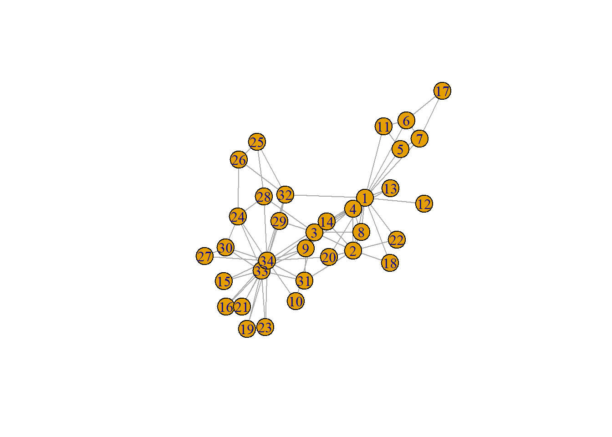
# Make adjacency matrix
g_matrix <- as_adjacency_matrix(g_zach, type = "both", sparse = FALSE)
g_matrix#> [,1] [,2] [,3] [,4] [,5] [,6] [,7] [,8] [,9] [,10] [,11] [,12] [,13] [,14] [,15] [,16] [,17]
#> [1,] 0 1 1 1 1 1 1 1 1 0 1 1 1 1 0 0 0
#> [2,] 1 0 1 1 0 0 0 1 0 0 0 0 0 1 0 0 0
#> [3,] 1 1 0 1 0 0 0 1 1 1 0 0 0 1 0 0 0
#> [4,] 1 1 1 0 0 0 0 1 0 0 0 0 1 1 0 0 0
#> [5,] 1 0 0 0 0 0 1 0 0 0 1 0 0 0 0 0 0
#> [6,] 1 0 0 0 0 0 1 0 0 0 1 0 0 0 0 0 1
#> [7,] 1 0 0 0 1 1 0 0 0 0 0 0 0 0 0 0 1
#> [8,] 1 1 1 1 0 0 0 0 0 0 0 0 0 0 0 0 0
#> [9,] 1 0 1 0 0 0 0 0 0 0 0 0 0 0 0 0 0
#> [10,] 0 0 1 0 0 0 0 0 0 0 0 0 0 0 0 0 0
#> [11,] 1 0 0 0 1 1 0 0 0 0 0 0 0 0 0 0 0
#> [12,] 1 0 0 0 0 0 0 0 0 0 0 0 0 0 0 0 0
#> [13,] 1 0 0 1 0 0 0 0 0 0 0 0 0 0 0 0 0
#> [14,] 1 1 1 1 0 0 0 0 0 0 0 0 0 0 0 0 0
#> [15,] 0 0 0 0 0 0 0 0 0 0 0 0 0 0 0 0 0
#> [16,] 0 0 0 0 0 0 0 0 0 0 0 0 0 0 0 0 0
#> [17,] 0 0 0 0 0 1 1 0 0 0 0 0 0 0 0 0 0
#> [18,] 1 1 0 0 0 0 0 0 0 0 0 0 0 0 0 0 0
#> [19,] 0 0 0 0 0 0 0 0 0 0 0 0 0 0 0 0 0
#> [20,] 1 1 0 0 0 0 0 0 0 0 0 0 0 0 0 0 0
#> [21,] 0 0 0 0 0 0 0 0 0 0 0 0 0 0 0 0 0
#> [22,] 1 1 0 0 0 0 0 0 0 0 0 0 0 0 0 0 0
#> [23,] 0 0 0 0 0 0 0 0 0 0 0 0 0 0 0 0 0
#> [24,] 0 0 0 0 0 0 0 0 0 0 0 0 0 0 0 0 0
#> [25,] 0 0 0 0 0 0 0 0 0 0 0 0 0 0 0 0 0
#> [26,] 0 0 0 0 0 0 0 0 0 0 0 0 0 0 0 0 0
#> [27,] 0 0 0 0 0 0 0 0 0 0 0 0 0 0 0 0 0
#> [28,] 0 0 1 0 0 0 0 0 0 0 0 0 0 0 0 0 0
#> [29,] 0 0 1 0 0 0 0 0 0 0 0 0 0 0 0 0 0
#> [30,] 0 0 0 0 0 0 0 0 0 0 0 0 0 0 0 0 0
#> [31,] 0 1 0 0 0 0 0 0 1 0 0 0 0 0 0 0 0
#> [32,] 1 0 0 0 0 0 0 0 0 0 0 0 0 0 0 0 0
#> [33,] 0 0 1 0 0 0 0 0 1 0 0 0 0 0 1 1 0
#> [34,] 0 0 0 0 0 0 0 0 1 1 0 0 0 1 1 1 0
#> [,18] [,19] [,20] [,21] [,22] [,23] [,24] [,25] [,26] [,27] [,28] [,29] [,30] [,31] [,32]
#> [1,] 1 0 1 0 1 0 0 0 0 0 0 0 0 0 1
#> [2,] 1 0 1 0 1 0 0 0 0 0 0 0 0 1 0
#> [3,] 0 0 0 0 0 0 0 0 0 0 1 1 0 0 0
#> [4,] 0 0 0 0 0 0 0 0 0 0 0 0 0 0 0
#> [5,] 0 0 0 0 0 0 0 0 0 0 0 0 0 0 0
#> [6,] 0 0 0 0 0 0 0 0 0 0 0 0 0 0 0
#> [7,] 0 0 0 0 0 0 0 0 0 0 0 0 0 0 0
#> [8,] 0 0 0 0 0 0 0 0 0 0 0 0 0 0 0
#> [9,] 0 0 0 0 0 0 0 0 0 0 0 0 0 1 0
#> [10,] 0 0 0 0 0 0 0 0 0 0 0 0 0 0 0
#> [11,] 0 0 0 0 0 0 0 0 0 0 0 0 0 0 0
#> [12,] 0 0 0 0 0 0 0 0 0 0 0 0 0 0 0
#> [13,] 0 0 0 0 0 0 0 0 0 0 0 0 0 0 0
#> [14,] 0 0 0 0 0 0 0 0 0 0 0 0 0 0 0
#> [15,] 0 0 0 0 0 0 0 0 0 0 0 0 0 0 0
#> [16,] 0 0 0 0 0 0 0 0 0 0 0 0 0 0 0
#> [17,] 0 0 0 0 0 0 0 0 0 0 0 0 0 0 0
#> [18,] 0 0 0 0 0 0 0 0 0 0 0 0 0 0 0
#> [19,] 0 0 0 0 0 0 0 0 0 0 0 0 0 0 0
#> [20,] 0 0 0 0 0 0 0 0 0 0 0 0 0 0 0
#> [21,] 0 0 0 0 0 0 0 0 0 0 0 0 0 0 0
#> [22,] 0 0 0 0 0 0 0 0 0 0 0 0 0 0 0
#> [23,] 0 0 0 0 0 0 0 0 0 0 0 0 0 0 0
#> [24,] 0 0 0 0 0 0 0 0 1 0 1 0 1 0 0
#> [25,] 0 0 0 0 0 0 0 0 1 0 1 0 0 0 1
#> [26,] 0 0 0 0 0 0 1 1 0 0 0 0 0 0 1
#> [27,] 0 0 0 0 0 0 0 0 0 0 0 0 1 0 0
#> [28,] 0 0 0 0 0 0 1 1 0 0 0 0 0 0 0
#> [29,] 0 0 0 0 0 0 0 0 0 0 0 0 0 0 1
#> [30,] 0 0 0 0 0 0 1 0 0 1 0 0 0 0 0
#> [31,] 0 0 0 0 0 0 0 0 0 0 0 0 0 0 0
#> [32,] 0 0 0 0 0 0 0 1 1 0 0 1 0 0 0
#> [33,] 0 1 0 1 0 1 1 0 0 0 0 0 1 1 1
#> [34,] 0 1 1 1 0 1 1 0 0 1 1 1 1 1 1
#> [,33] [,34]
#> [1,] 0 0
#> [2,] 0 0
#> [3,] 1 0
#> [4,] 0 0
#> [5,] 0 0
#> [6,] 0 0
#> [7,] 0 0
#> [8,] 0 0
#> [9,] 1 1
#> [10,] 0 1
#> [11,] 0 0
#> [12,] 0 0
#> [13,] 0 0
#> [14,] 0 1
#> [15,] 1 1
#> [16,] 1 1
#> [17,] 0 0
#> [18,] 0 0
#> [19,] 1 1
#> [20,] 0 1
#> [21,] 1 1
#> [22,] 0 0
#> [23,] 1 1
#> [24,] 1 1
#> [25,] 0 0
#> [26,] 0 0
#> [27,] 0 1
#> [28,] 0 1
#> [29,] 0 1
#> [30,] 1 1
#> [31,] 1 1
#> [32,] 1 1
#> [33,] 0 1
#> [34,] 1 02.2 Descriptives
#> [1] 34#> [1] 78#> [1] 16 9 10 6 3 4 4 4 5 2 3 1 2 5 2 2 2 2 2 3 2 2 2 5 3 3 2 4 3 4 4 6
#> [33] 12 17
#> [1] 0.1500000 0.3333333 0.2444444 0.6666667 0.6666667 0.5000000 0.5000000 1.0000000 0.5000000
#> [10] 0.0000000 0.6666667 NaN 1.0000000 0.6000000 1.0000000 1.0000000 1.0000000 1.0000000
#> [19] 1.0000000 0.3333333 1.0000000 1.0000000 1.0000000 0.4000000 0.3333333 0.3333333 1.0000000
#> [28] 0.1666667 0.3333333 0.6666667 0.5000000 0.2000000 0.1969697 0.11029412.3 Dyad census
#> $mut
#> [1] 78
#>
#> $asym
#> [1] 0
#>
#> $null
#> [1] 4832.4 Triad census
#> [1] 3971 0 1575 0 0 0 0 0 0 0 393 0 0 0 0 45#> 003 012 102 021D 021U 021C 111D 111U 030T 030C 201 120D 120U 120C 210 300
#> [1,] 3971 0 1575 0 0 0 0 0 0 0 393 0 0 0 0 45unloadNamespace("sna") #I will detach this package again, otherwise it will interfere with all kind of functions from igraph, and my students will hate me for that.2.5 Visualisation
# changing V
V(g_zach)$size = betweenness(g_zach, normalized = T, directed = FALSE) * 60 + 10 #after some trial and error
plot(g_zach, mode = "undirected")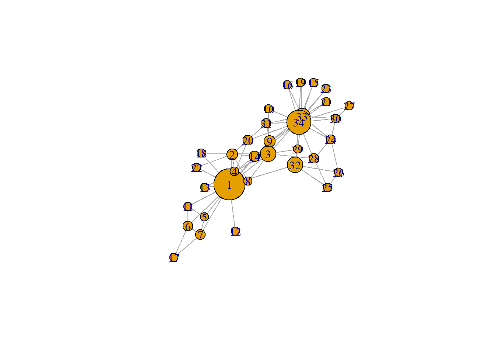
set.seed(2345)
l <- layout_with_mds(g_zach) #https://igraph.org/r/doc/layout_with_mds.html
plot(g_zach, layout = l)
#> [,1] [,2]
#> [1,] 1.070931935 -0.172458113
#> [2,] 0.732844464 0.754023309
#> [3,] 0.100582299 0.397693607
#> [4,] 0.708246655 0.570205545
#> [5,] 1.816293170 -0.120778206
#> [6,] 1.881329566 -0.135518854
#> [7,] 1.881329566 -0.135518854
#> [8,] 0.812606714 0.472619437
#> [9,] -0.003769996 0.615513628
#> [10,] -0.685680315 0.621065149
#> [11,] 1.816293170 -0.120778206
#> [12,] 1.621247830 -0.065820692
#> [13,] 1.637845123 0.001789972
#> [14,] 0.067317230 0.681421148
#> [15,] -1.796316404 0.351417630
#> [16,] -1.796316404 0.351417630
#> [17,] 2.775260452 -0.124317652
#> [18,] 1.616210024 0.182510197
#> [19,] -1.796316404 0.351417630
#> [20,] 0.048362858 0.566654982
#> [21,] -1.796316404 0.351417630
#> [22,] 1.616210024 0.182510197
#> [23,] -1.796316404 0.351417630
#> [24,] -1.891240567 -0.799574907
#> [25,] -0.258345165 -2.006346563
#> [26,] -0.360530857 -2.131642875
#> [27,] -1.865177401 0.128596564
#> [28,] -0.760226022 -0.529392331
#> [29,] -0.710979936 -0.299960128
#> [30,] -1.898426916 -0.149398746
#> [31,] -0.568691923 0.804189411
#> [32,] -0.048136037 -0.870967614
#> [33,] -1.023681000 -0.035802363
#> [34,] -1.146442924 -0.037605192
plot(g_zach, layout = l, margin = c(0, 0, 0, 0))
legend(x = -2, y = -1.5, c("Note: the position of nodes 1 and 34 have been set by Jochem Tolsma \n for visualisation purposes only and do not reflect network properties"),
bty = "n", cex = 0.8)
2.6 Twittersphere
#> List of 3
#> $ keyf :'data.frame': 147 obs. of 41 variables:
#> $ mydata:List of 8
#> ..- attr(*, "higher")= Named logi [1:9] FALSE FALSE FALSE FALSE FALSE FALSE ...
#> .. ..- attr(*, "names")= chr [1:9] "fnet,fnet" "atmnet,fnet" "rtnet,fnet" "fnet,atmnet" ...
#> ..- attr(*, "disjoint")= Named logi [1:9] FALSE FALSE FALSE FALSE FALSE FALSE ...
#> .. ..- attr(*, "names")= chr [1:9] "fnet,fnet" "atmnet,fnet" "rtnet,fnet" "fnet,atmnet" ...
#> ..- attr(*, "atLeastOne")= Named logi [1:9] FALSE FALSE FALSE FALSE FALSE FALSE ...
#> .. ..- attr(*, "names")= chr [1:9] "fnet,fnet" "atmnet,fnet" "rtnet,fnet" "fnet,atmnet" ...
#> ..- attr(*, "class")= chr "siena"
#> $ seats :'data.frame': 150 obs. of 5 variables:fnet <- mydata$depvars$fnet
atmnet <- mydata$depvars$atmnet
rtnet <- mydata$depvars$rtnet
vrouw <- mydata$cCovars$vrouw
partij <- mydata$cCovars$partij
ethminz <- mydata$cCovars$ethminz
lft <- mydata$cCovars$lft
# if you construct an object for RSiena, covariates are mean centered by default. I would like to
# have the original values again.
ethminz <- ethminz + attributes(ethminz)$mean
partij <- partij + attributes(partij)$mean
vrouw <- vrouw + attributes(vrouw)$mean
lft <- lft + attributes(lft)$mean#> 'sienaDependent' num [1:147, 1:147, 1:3] 0 0 0 1 0 1 0 1 1 1 ...
#> - attr(*, "type")= chr "oneMode"
#> - attr(*, "sparse")= logi FALSE
#> - attr(*, "nodeSet")= chr "Actors"
#> - attr(*, "netdims")= int [1:3] 147 147 3
#> - attr(*, "allowOnly")= logi TRUE
#> - attr(*, "uponly")= logi [1:2] TRUE FALSE
#> - attr(*, "downonly")= logi [1:2] FALSE FALSE
#> - attr(*, "distance")= int [1:2] 527 277
#> - attr(*, "vals")=List of 3
#> ..$ : 'table' int [1:4(1d)] 15781 5389 292 147
#> .. ..- attr(*, "dimnames")=List of 1
#> .. .. ..$ mymat: chr [1:4] "0" "1" "10" NA
#> ..$ : 'table' int [1:4(1d)] 15254 5916 292 147
#> .. ..- attr(*, "dimnames")=List of 1
#> .. .. ..$ mymat: chr [1:4] "0" "1" "10" NA
#> ..$ : 'table' int [1:3(1d)] 15457 6005 147
#> .. ..- attr(*, "dimnames")=List of 1
#> .. .. ..$ mymat: chr [1:3] "0" "1" NA
#> - attr(*, "nval")= int [1:3] 21462 21462 21462
#> - attr(*, "noMissing")= num [1:3] 0 0 0
#> - attr(*, "noMissingEither")= num [1:2] 0 0
#> - attr(*, "nonMissingEither")= num [1:2] 21462 21462
#> - attr(*, "balmean")= num 0.347
#> - attr(*, "structmean")= num 0.321
#> - attr(*, "simMean")= logi NA
#> - attr(*, "symmetric")= logi FALSE
#> - attr(*, "missing")= logi FALSE
#> - attr(*, "structural")= logi TRUE
#> - attr(*, "range2")= num [1:2] 0 1
#> - attr(*, "ones")= Named int [1:3] 5389 5916 6005
#> ..- attr(*, "names")= chr [1:3] "1" "1" "1"
#> - attr(*, "density")= Named num [1:3] 0.251 0.276 0.28
#> ..- attr(*, "names")= chr [1:3] "1" "1" "1"
#> - attr(*, "degree")= Named num [1:3] 36.7 40.2 40.9
#> ..- attr(*, "names")= chr [1:3] "1" "1" "1"
#> - attr(*, "averageOutDegree")= num 39.3
#> - attr(*, "averageInDegree")= num 39.3
#> - attr(*, "maxObsOutDegree")= num [1:3] 137 137 137
#> - attr(*, "missings")= num [1:3] 0 0 0
#> - attr(*, "name")= chr "fnet"fnet1 <- fnet[, , 1] #friendship network wave 1
atmnet1 <- atmnet[, , 1] #atmention network wave 1
# we will use wave 2 and 3 later.
atmnet2 <- atmnet[, , 2]
atmnet3 <- atmnet[, , 3]# table(fnet1, useNA='always') #uncomment if you want
fnet1[fnet1 == 10] <- 0
# table(fnet1, useNA='always') #uncomment if you want
atmnet1[atmnet1 == 10] <- 0
atmnet2[atmnet2 == 10] <- 0
atmnet3[atmnet3 == 10] <- 02.6.1 Descriptives
G1 <- igraph::graph_from_adjacency_matrix(atmnet1, mode = "directed", weighted = NULL, diag = TRUE, add.colnames = NA,
add.rownames = NA)
# we need to retrieve the edges.
edges <- igraph::as_data_frame(G1, what = "edges")
# the first variable of the data we can attach needs to be some id, thus reorder columns of keyf
keyf <- cbind(keyf$EGOid, keyf[, names(keyf) != "EGOid"])
# the name has been changed as well. Lets correct this
names(keyf)[1] <- "EGOid"
# rebuild the graph.
G1 <- graph_from_data_frame(edges, directed = TRUE, vertices = keyf)
# let us examine the attributes
vertex_attr(G1)#> $name
#> [1] "1" "2" "3" "4" "5" "6" "7" "8" "9" "10" "11" "12" "13" "14" "15"
#> [16] "16" "17" "18" "19" "20" "21" "22" "23" "24" "25" "26" "27" "28" "29" "30"
#> [31] "31" "32" "33" "34" "35" "36" "37" "38" "39" "40" "41" "42" "43" "44" "45"
#> [46] "46" "47" "48" "49" "50" "51" "52" "53" "54" "55" "56" "57" "58" "59" "60"
#> [61] "61" "62" "63" "64" "65" "66" "67" "68" "69" "70" "71" "72" "73" "74" "75"
#> [76] "76" "77" "78" "79" "80" "81" "82" "83" "84" "85" "86" "87" "88" "89" "90"
#> [91] "91" "92" "93" "94" "95" "96" "97" "98" "99" "100" "101" "102" "103" "104" "105"
#> [106] "106" "107" "108" "109" "110" "111" "112" "113" "114" "115" "116" "117" "118" "119" "120"
#> [121] "121" "122" "123" "124" "125" "126" "127" "128" "129" "130" "131" "132" "133" "134" "135"
#> [136] "136" "137" "138" "139" "140" "141" "142" "143" "144" "145" "146" "147"
#>
#> $ZetelSegment20170315
#> [1] 1 2 6 3 3 1 4 4 3 1 3 3 2 6 3 4 3 2 4 1 1 5 1 2 3 2 1 1 2 5 2 6 4 5 6 5 6 3 1 4 1 6 4 6 2 3 5
#> [48] 4 6 6 2 2 1 3 2 2 4 3 3 5 2 4 4 3 2 5 4 5 4 1 4 4 3 3 6 3 6 6 6 3 3 1 2 6 6 6 6 6 6 6 6 4 4 4
#> [95] 4 4 4 4 4 5 2 2 2 2 2 2 4 3 3 4 3 3 3 2 2 2 2 5 5 5 5 5 5 5 5 5 5 5 5 6 6 5 5 5 5 6 6 1 1 1 1
#> [142] 1 1 1 1 1 1
#>
#> $ZetelRij20170315
#> [1] 1 3 6 2 3 4 4 3 4 2 4 2 3 6 4 2 5 5 5 4 4 3 4 1 2 2 3 4 1 1 2 6 2 5 3 6 1 3 3 4 5 5 6 3 2 5 6
#> [48] 1 2 1 5 6 5 5 4 4 3 4 5 4 6 1 2 4 5 2 6 5 3 1 5 4 1 1 6 3 4 3 4 5 3 6 5 2 2 3 4 4 5 5 6 3 5 5
#> [95] 4 6 6 5 6 6 5 4 4 3 3 4 6 6 6 4 6 6 6 6 6 6 6 5 6 6 4 1 2 3 3 2 4 4 4 5 6 3 5 5 6 4 5 5 6 2 2
#> [142] 5 5 6 6 6 6
#>
#> $ZetelKolom20170315
#> [1] 2 1 3 1 2 1 3 4 3 1 5 2 3 6 2 1 3 4 1 4 2 1 3 2 3 1 4 5 1 1 2 4 3 5 2 2 2 1 2 5 5 2 2 4 3 2 4
#> [48] 2 2 1 2 1 1 5 4 5 1 1 4 2 2 1 2 4 5 2 3 2 3 1 2 1 2 1 2 4 2 1 3 1 3 6 3 1 3 3 4 5 4 5 5 2 3 4
#> [95] 4 5 4 5 6 1 1 3 1 4 2 2 1 6 5 2 4 3 1 6 5 4 3 4 5 6 1 2 3 3 4 1 4 5 3 1 1 2 1 3 3 1 3 4 5 3 2
#> [142] 2 3 1 2 3 4
#>
#> $EGOhandle
#> [1] 101 201 301 401 501 701 801 1001 1101 1501 1701 1901 2001
#> [14] 2701 2901 3001 3101 3201 3401 4101 4201 4301 4401 4701 4801 5001
#> [27] 5101 5201 5801 6001 6401 6501 6601 6801 6901 7001 7401 7601 7801
#> [40] 8101 8801 9001 9101 9201 9301 9501 9601 9701 9901 10101 10201 10301
#> [53] 10402 10501 10701 10901 11201 11401 12001 12101 12301 12601 12801 13101 13401
#> [66] 13501 13801 14101 14201 14401 14601 14901 15001 15101 15501 15601 15801 16101
#> [79] 16701 16801 17001 18901 23001 30901 31101 31201 31401 31501 31601 31701 31901
#> [92] 35501 36001 36401 36501 36601 36801 36901 37001 37101 40501 41001 41301 41401
#> [105] 42001 44901 56601 56901 57101 57201 57401 57701 58101 58301 58401 58801 58901
#> [118] 63701 63801 63901 70401 70601 70701 71001 71101 71201 71301 71401 71501 71701
#> [131] 72201 74401 74801 75001 81801 83901 84201 103801 106102 109001 109101 109401 109501
#> [144] 109701 109801 109901 110001
#>
#> $IDActor
#> [1] 1 2 3 4 5 7 8 10 11 15 17 19 20 27 29 30 31 32 34
#> [20] 41 42 43 44 47 48 50 51 52 58 60 64 65 66 68 69 70 74 76
#> [39] 78 81 88 90 91 92 93 95 96 97 99 101 102 103 104 105 107 109 112
#> [58] 114 120 121 123 126 128 131 134 135 138 141 142 144 146 149 150 151 155 156
#> [77] 158 161 167 168 170 189 230 309 311 312 314 315 316 317 319 355 360 364 365
#> [96] 366 368 369 370 371 405 410 413 414 420 449 566 569 571 572 574 577 581 583
#> [115] 584 588 589 637 638 639 704 706 707 710 711 712 713 714 715 717 722 744 748
#> [134] 750 818 839 842 1038 1061 1090 1091 1094 1095 1097 1098 1099 1100
#>
#> $Handle.
#> [1] "1e (mogelijke) account van actor" "1e (mogelijke) account van actor"
#> [3] "1e (mogelijke) account van actor" "1e (mogelijke) account van actor"
#> [5] "1e (mogelijke) account van actor" "1e (mogelijke) account van actor"
#> [7] "1e (mogelijke) account van actor" "1e (mogelijke) account van actor"
#> [9] "1e (mogelijke) account van actor" "1e (mogelijke) account van actor"
#> [11] "1e (mogelijke) account van actor" "1e (mogelijke) account van actor"
#> [13] "1e (mogelijke) account van actor" "1e (mogelijke) account van actor"
#> [15] "1e (mogelijke) account van actor" "1e (mogelijke) account van actor"
#> [17] "1e (mogelijke) account van actor" "1e (mogelijke) account van actor"
#> [19] "1e (mogelijke) account van actor" "1e (mogelijke) account van actor"
#> [21] "1e (mogelijke) account van actor" "1e (mogelijke) account van actor"
#> [23] "1e (mogelijke) account van actor" "1e (mogelijke) account van actor"
#> [25] "1e (mogelijke) account van actor" "1e (mogelijke) account van actor"
#> [27] "1e (mogelijke) account van actor" "1e (mogelijke) account van actor"
#> [29] "1e (mogelijke) account van actor" "1e (mogelijke) account van actor"
#> [31] "1e (mogelijke) account van actor" "1e (mogelijke) account van actor"
#> [33] "1e (mogelijke) account van actor" "1e (mogelijke) account van actor"
#> [35] "1e (mogelijke) account van actor" "1e (mogelijke) account van actor"
#> [37] "1e (mogelijke) account van actor" "1e (mogelijke) account van actor"
#> [39] "1e (mogelijke) account van actor" "1e (mogelijke) account van actor"
#> [41] "1e (mogelijke) account van actor" "1e (mogelijke) account van actor"
#> [43] "1e (mogelijke) account van actor" "1e (mogelijke) account van actor"
#> [45] "1e (mogelijke) account van actor" "1e (mogelijke) account van actor"
#> [47] "1e (mogelijke) account van actor" "1e (mogelijke) account van actor"
#> [49] "1e (mogelijke) account van actor" "1e (mogelijke) account van actor"
#> [51] "1e (mogelijke) account van actor" "1e (mogelijke) account van actor"
#> [53] "2e (mogelijke) account van actor" "1e (mogelijke) account van actor"
#> [55] "1e (mogelijke) account van actor" "1e (mogelijke) account van actor"
#> [57] "1e (mogelijke) account van actor" "1e (mogelijke) account van actor"
#> [59] "1e (mogelijke) account van actor" "1e (mogelijke) account van actor"
#> [61] "1e (mogelijke) account van actor" "1e (mogelijke) account van actor"
#> [63] "1e (mogelijke) account van actor" "1e (mogelijke) account van actor"
#> [65] "1e (mogelijke) account van actor" "1e (mogelijke) account van actor"
#> [67] "1e (mogelijke) account van actor" "1e (mogelijke) account van actor"
#> [69] "1e (mogelijke) account van actor" "1e (mogelijke) account van actor"
#> [71] "1e (mogelijke) account van actor" "1e (mogelijke) account van actor"
#> [73] "1e (mogelijke) account van actor" "1e (mogelijke) account van actor"
#> [75] "1e (mogelijke) account van actor" "1e (mogelijke) account van actor"
#> [77] "1e (mogelijke) account van actor" "1e (mogelijke) account van actor"
#> [79] "1e (mogelijke) account van actor" "1e (mogelijke) account van actor"
#> [81] "1e (mogelijke) account van actor" "1e (mogelijke) account van actor"
#> [83] "1e (mogelijke) account van actor" "1e (mogelijke) account van actor"
#> [85] "1e (mogelijke) account van actor" "1e (mogelijke) account van actor"
#> [87] "1e (mogelijke) account van actor" "1e (mogelijke) account van actor"
#> [89] "1e (mogelijke) account van actor" "1e (mogelijke) account van actor"
#> [91] "1e (mogelijke) account van actor" "1e (mogelijke) account van actor"
#> [93] "1e (mogelijke) account van actor" "1e (mogelijke) account van actor"
#> [95] "1e (mogelijke) account van actor" "1e (mogelijke) account van actor"
#> [97] "1e (mogelijke) account van actor" "1e (mogelijke) account van actor"
#> [99] "1e (mogelijke) account van actor" "1e (mogelijke) account van actor"
#> [101] "1e (mogelijke) account van actor" "1e (mogelijke) account van actor"
#> [103] "1e (mogelijke) account van actor" "1e (mogelijke) account van actor"
#> [105] "1e (mogelijke) account van actor" "1e (mogelijke) account van actor"
#> [107] "1e (mogelijke) account van actor" "1e (mogelijke) account van actor"
#> [109] "1e (mogelijke) account van actor" "1e (mogelijke) account van actor"
#> [111] "1e (mogelijke) account van actor" "1e (mogelijke) account van actor"
#> [113] "1e (mogelijke) account van actor" "1e (mogelijke) account van actor"
#> [115] "1e (mogelijke) account van actor" "1e (mogelijke) account van actor"
#> [117] "1e (mogelijke) account van actor" "1e (mogelijke) account van actor"
#> [119] "1e (mogelijke) account van actor" "1e (mogelijke) account van actor"
#> [121] "1e (mogelijke) account van actor" "1e (mogelijke) account van actor"
#> [123] "1e (mogelijke) account van actor" "1e (mogelijke) account van actor"
#> [125] "1e (mogelijke) account van actor" "1e (mogelijke) account van actor"
#> [127] "1e (mogelijke) account van actor" "1e (mogelijke) account van actor"
#> [129] "1e (mogelijke) account van actor" "1e (mogelijke) account van actor"
#> [131] "1e (mogelijke) account van actor" "1e (mogelijke) account van actor"
#> [133] "1e (mogelijke) account van actor" "1e (mogelijke) account van actor"
#> [135] "1e (mogelijke) account van actor" "1e (mogelijke) account van actor"
#> [137] "1e (mogelijke) account van actor" "1e (mogelijke) account van actor"
#> [139] "2e (mogelijke) account van actor" "1e (mogelijke) account van actor"
#> [141] "1e (mogelijke) account van actor" "1e (mogelijke) account van actor"
#> [143] "1e (mogelijke) account van actor" "1e (mogelijke) account van actor"
#> [145] "1e (mogelijke) account van actor" "1e (mogelijke) account van actor"
#> [147] "1e (mogelijke) account van actor"
#>
#> $Twitterhandle
#> [1] "FleurAgemaPVV " "MustafaAmhaouch" "khadijaArib " "tamaravanark " "MalikAzmani "
#> [6] "harmbeertema " "SalimaBelhaj " "Vera_Bergkamp " "BisschopRoelof " "Martinbosma_pvv"
#> [11] "andrebosman " "HanTenBroeke " "HankeBruinsSlot" "JaspervanDijkSP" "elbertdijkgraaf"
#> [16] "piadijkstra " "remcovvd " "carladikfaber " "PDuisenberg " "JacoGeurts "
#> [21] "GraafdeMachiel " "rikgrashoff " "RidderDionGraus" "sybrandbuma " "markharbers "
#> [26] "PieterHeerma " "lilianhelderpvv" "Martijncda " "MonaKeijzer " "jesseklaver "
#> [31] "RaymondKnops " "NineKooiman " "wkoolmees " "HenkKrol " "attjekuiken "
#> [36] "tunahankuzu " "RenskeLeijten " "HelmaLodders " "BarryMadlener " "Paul_van_Meenen"
#> [41] "AgnesMulderCDA " "henknijboer " "cnijkerken " "MichielvNispen " "PieterOmtzigt "
#> [46] "foortvanoosten " "selcukozturknl " "APechtold " "ronaldvanraak " "emileroemer "
#> [51] "michelrog " "ErikRonnes " "rderoonpvv " "arnorutte " "carolaschouten "
#> [56] "gertjansegers " "swsjoerdsma " "keesvdstaaij " "ockjetellegen " "mariannethieme "
#> [61] "MvanToorenburg " "SvVeldhoven " "KeesVee " "BarbaraVVD " "JoelVoordewind "
#> [66] "lindavoortman " "aukjedevries " "WassenbergFrank" "svanweyenberg " "geertwilderspvv"
#> [71] "bvantwout " "erikziengs " "HalbeZijlstra " "MinPres " "ministerPloumen"
#> [76] "JeanineHennis " "J_Dijsselbloem " "LodewijkA " "sharon_dijksma " "SanderDekker "
#> [81] "dijkhoff " "thierrybaudet " "eppobruins " "MarijnissenL " "SadetKarabulut "
#> [86] "SandraBeckerman" "peterkwint " "bartvankent " "CemLacin " "FrankFutselaar "
#> [91] "MaartenHijink " "ivanengelshoven" "jpaternotte " "RobJetten " "JessicaVanEijs "
#> [96] "GroothuizenD66 " "RensRaemakers " "achrafbouali66 " "AntjeDiertens " "TjeerdNZO "
#> [101] "RenePetersOss " "harryvdmolen " "AnneKuik " "ChrisvanDamCDA " "JobavdBerg "
#> [106] "mvonmartels " "DennisWiersma " "bentebecker " "Sophie_Hermans " "a_mulder "
#> [111] "DilanYesilgoz " "danielkoerhuis " "ZelYassini " "Worsdorfer " "ArneWeverling "
#> [116] "svenplanken " "Jan_Middendorp " "LeonieSazias " "mj_vanrooijen " "CvanBrenk "
#> [121] "estherouwehand " "kathalijne " "TomvanderLee " "CorinneEllemeet" "ZihniOzdil "
#> [126] "bartsnels " "suzanne_GL " "BramvanOjikGL " "NevinOzutok " "Lisawesterveld "
#> [131] "IsabelleDiks " "GroenLiesbeth " "LammertvanRaan " "FemkeMerel " "F_azarkan "
#> [136] "dijkvangijs " "kirstenvdhul " "KarenGerbrands1" "THiddema " "VickyMaeijer "
#> [141] "GidiMarkuszower" "Danai_PVV " "edgarmulder1 " "leondejong " "gjfpopken "
#> [146] "KopsPVV " "rvanaalst "
#>
#> $Naam
#> [1] "Agema, Fleur " "Amhaouch, Mustafa "
#> [3] "Arib, Khadija " "v. Ark, Tamara "
#> [5] "Azmani, Malik " "Beertema, Harm "
#> [7] "Belhaj, Salima " "Bergkamp, Vera "
#> [9] "Bisschop, Roelof " "Bosma, Martin "
#> [11] "Bosman, Andre " "ten Broeke, Han "
#> [13] "Bruins Slot, Hanke " "Van Dijk, Jasper "
#> [15] "Dijkgraaf, Elbert " "Dijkstra, Pia "
#> [17] "Dijkstra, Remco " "Dik-Faber, Carla "
#> [19] "Duisenberg, Pieter " "Geurts, Jaco "
#> [21] "De Graaf, Machiel " "Grashoff, Rik "
#> [23] "Graus, Dion " "Van Haersma Buma, Sybrand "
#> [25] "Harbers, Mark " "Heerma, Pieter "
#> [27] "Helder, Lilian " "Van Helvert, Martijn "
#> [29] "Keijzer, Mona " "Klaver, jesse "
#> [31] "Knops, Raymond " "Kooiman, Nine "
#> [33] "Koolmees, Wouter " "Krol, Henk "
#> [35] "Kuiken, Attje " "Kuzu, Tunahan "
#> [37] "Leijten, Renske " "Lodders, Helma "
#> [39] "Madlener, Barry " "Van Meenen, Paul "
#> [41] "Mulder, Agnes " "Nijboer, Henk "
#> [43] "Nijkerken-de Haan, Chantal " "Van Nispen, Michiel "
#> [45] "Omtzigt, Pieter " "Van Oosten, Foort "
#> [47] "Ozturk, Selcuk " "Pechtold, Alexander "
#> [49] "Van Raak, Ronald " "Roemer, Emile "
#> [51] "Rog, Michel " "Ronnes, Erik "
#> [53] "De Roon, Raymond " "Rutte, Arno "
#> [55] "Schouten, Carola " "Segers, Gert-Jan "
#> [57] "Sjoerdsma, Sjoerd " "Van der Staaij, Kees "
#> [59] "Tellegen, Ockje " "Thieme, Marianne "
#> [61] "Van Toorenburg, Madeleine " "Van Veldhoven, Stientje "
#> [63] "Verhoeven, Kees " "Visser, Barbara "
#> [65] "Voordewind, Joel " "Voortman, Linda "
#> [67] "De Vries, Aukje " "Wassenberg, Frank "
#> [69] "Van Weyenberg, Steven " "Wilders, Geert "
#> [71] "Van t'Wout, Bas " "Ziengs, Erik "
#> [73] "Zijlstra, Halbe " "Rutte, Mark "
#> [75] "Ploumen, Lilianne " "Hennis-Plasschaert, Jeanine "
#> [77] "Dijsselbloem, Jeroen " "Asscher, Lodewijk "
#> [79] "Dijksma, Sharon " "Dekker, Sander "
#> [81] "Dijkhoff, Klaas " "Thierry Baudet "
#> [83] "Eppo Bruins " "LILIAN MARIJNISSEN "
#> [85] "SADET KARABULUT " "SANDRA BECKERMAN "
#> [87] "PETER KWINT " "BART VAN KENT "
#> [89] "CEM LACIN " "FRANK FUTSELAAR "
#> [91] "MAARTEN HIJINK " "Ingrid van Engelshoven "
#> [93] "Jan Paternotte " "Rob Jetten "
#> [95] "Jessica van Eijs " "Maarten Groothuizen "
#> [97] "Rens Raemakers " "Achraf Bouali "
#> [99] "Antje Diertens " "Tjeerd de Groot "
#> [101] "René Peters " "Harry van der Molen "
#> [103] "Anne Kuik " "Chris van Dam "
#> [105] "Joba van den Berg-Jansen " "Maurits von Martels "
#> [107] "Dennis Wiersma " "Bente Becker "
#> [109] "Sophie Hermans " "Anne Mulder "
#> [111] "Dilan Yesilgöz-Zegerius " "Daniel Koerhuis "
#> [113] "Zohair el Yassini " "Martin Wörsdörfer "
#> [115] "Arne Weverling " "Sven Koopmans "
#> [117] "Jan Middendorp " "Léonie Sazias "
#> [119] "Martin van Rooijen " "Corrie van Brenk "
#> [121] "Esther Ouwehand " "Kathalijne Buitenweg "
#> [123] "Tom van der Lee " "Corinne Ellemeet "
#> [125] "Zihni Özdil " "Bart Snels "
#> [127] "Suzanne Kröger " "Bram van Oijk "
#> [129] "Nevin Özütok " "Lisa Westerveld "
#> [131] "Isabelle Diks " "Liesbeth van Tongeren "
#> [133] "Lammert van Raan " "Femke Merel Arissen "
#> [135] "Farid Azarkan " "Gijs van Dijk "
#> [137] "Kirsten van den Hul " "Gerbrands, Karen "
#> [139] "Theo Hiddema " "Vicky Maeijer "
#> [141] "Gidi Markuszower " "Danai van Weerdenburg "
#> [143] "Edgar Mulder " "Léon de Jong "
#> [145] "Gabriëlle Popken " "Alexander Kops "
#> [147] "Roy van Aalst "
#>
#> $Kandidaat2017
#> [1] "wel kandidaat" "wel kandidaat" "wel kandidaat" "wel kandidaat" "wel kandidaat"
#> [6] "wel kandidaat" "wel kandidaat" "wel kandidaat" "wel kandidaat" "wel kandidaat"
#> [11] "wel kandidaat" "wel kandidaat" "wel kandidaat" "wel kandidaat" "wel kandidaat"
#> [16] "wel kandidaat" "wel kandidaat" "wel kandidaat" "wel kandidaat" "wel kandidaat"
#> [21] "wel kandidaat" "wel kandidaat" "wel kandidaat" "wel kandidaat" "wel kandidaat"
#> [26] "wel kandidaat" "wel kandidaat" "wel kandidaat" "wel kandidaat" "wel kandidaat"
#> [31] "wel kandidaat" "wel kandidaat" "wel kandidaat" "wel kandidaat" "wel kandidaat"
#> [36] "wel kandidaat" "wel kandidaat" "wel kandidaat" "wel kandidaat" "wel kandidaat"
#> [41] "wel kandidaat" "wel kandidaat" "wel kandidaat" "wel kandidaat" "wel kandidaat"
#> [46] "wel kandidaat" "wel kandidaat" "wel kandidaat" "wel kandidaat" "wel kandidaat"
#> [51] "wel kandidaat" "wel kandidaat" "wel kandidaat" "wel kandidaat" "wel kandidaat"
#> [56] "wel kandidaat" "wel kandidaat" "wel kandidaat" "wel kandidaat" "wel kandidaat"
#> [61] "wel kandidaat" "wel kandidaat" "wel kandidaat" "wel kandidaat" "wel kandidaat"
#> [66] "wel kandidaat" "wel kandidaat" "wel kandidaat" "wel kandidaat" "wel kandidaat"
#> [71] "wel kandidaat" "wel kandidaat" "wel kandidaat" "wel kandidaat" "wel kandidaat"
#> [76] "wel kandidaat" "wel kandidaat" "wel kandidaat" "wel kandidaat" "wel kandidaat"
#> [81] "wel kandidaat" "wel kandidaat" "wel kandidaat" "wel kandidaat" "wel kandidaat"
#> [86] "wel kandidaat" "wel kandidaat" "wel kandidaat" "wel kandidaat" "wel kandidaat"
#> [91] "wel kandidaat" "wel kandidaat" "wel kandidaat" "wel kandidaat" "wel kandidaat"
#> [96] "wel kandidaat" "wel kandidaat" "wel kandidaat" "wel kandidaat" "wel kandidaat"
#> [101] "wel kandidaat" "wel kandidaat" "wel kandidaat" "wel kandidaat" "wel kandidaat"
#> [106] "wel kandidaat" "wel kandidaat" "wel kandidaat" "wel kandidaat" "wel kandidaat"
#> [111] "wel kandidaat" "wel kandidaat" "wel kandidaat" "wel kandidaat" "wel kandidaat"
#> [116] "wel kandidaat" "wel kandidaat" "wel kandidaat" "wel kandidaat" "wel kandidaat"
#> [121] "wel kandidaat" "wel kandidaat" "wel kandidaat" "wel kandidaat" "wel kandidaat"
#> [126] "wel kandidaat" "wel kandidaat" "wel kandidaat" "wel kandidaat" "wel kandidaat"
#> [131] "wel kandidaat" "wel kandidaat" "wel kandidaat" "wel kandidaat" "wel kandidaat"
#> [136] "wel kandidaat" "wel kandidaat" "geen kandidaat" "wel kandidaat" "wel kandidaat"
#> [141] "wel kandidaat" "wel kandidaat" "wel kandidaat" "wel kandidaat" "wel kandidaat"
#> [146] "wel kandidaat" "wel kandidaat"
#>
#> $Elected20170315
#> [1] "yes, verkozen" "yes, verkozen" "yes, verkozen" "yes, verkozen" "yes, verkozen"
#> [6] "yes, verkozen" "yes, verkozen" "yes, verkozen" "yes, verkozen" "yes, verkozen"
#> [11] "yes, verkozen" "yes, verkozen" "yes, verkozen" "yes, verkozen" "yes, verkozen"
#> [16] "yes, verkozen" "yes, verkozen" "yes, verkozen" "yes, verkozen" "yes, verkozen"
#> [21] "yes, verkozen" "yes, verkozen" "yes, verkozen" "yes, verkozen" "yes, verkozen"
#> [26] "yes, verkozen" "yes, verkozen" "yes, verkozen" "yes, verkozen" "yes, verkozen"
#> [31] "yes, verkozen" "yes, verkozen" "yes, verkozen" "yes, verkozen" "yes, verkozen"
#> [36] "yes, verkozen" "yes, verkozen" "yes, verkozen" "yes, verkozen" "yes, verkozen"
#> [41] "yes, verkozen" "yes, verkozen" "yes, verkozen" "yes, verkozen" "yes, verkozen"
#> [46] "yes, verkozen" "yes, verkozen" "yes, verkozen" "yes, verkozen" "yes, verkozen"
#> [51] "yes, verkozen" "yes, verkozen" "yes, verkozen" "yes, verkozen" "yes, verkozen"
#> [56] "yes, verkozen" "yes, verkozen" "yes, verkozen" "yes, verkozen" "yes, verkozen"
#> [61] "yes, verkozen" "yes, verkozen" "yes, verkozen" "yes, verkozen" "yes, verkozen"
#> [66] "yes, verkozen" "yes, verkozen" "yes, verkozen" "yes, verkozen" "yes, verkozen"
#> [71] "yes, verkozen" "yes, verkozen" "yes, verkozen" "yes, verkozen" "yes, verkozen"
#> [76] "yes, verkozen" "yes, verkozen" "yes, verkozen" "yes, verkozen" "yes, verkozen"
#> [81] "yes, verkozen" "yes, verkozen" "yes, verkozen" "yes, verkozen" "yes, verkozen"
#> [86] "yes, verkozen" "yes, verkozen" "yes, verkozen" "yes, verkozen" "yes, verkozen"
#> [91] "yes, verkozen" "yes, verkozen" "yes, verkozen" "yes, verkozen" "yes, verkozen"
#> [96] "yes, verkozen" "yes, verkozen" "yes, verkozen" "yes, verkozen" "yes, verkozen"
#> [101] "yes, verkozen" "yes, verkozen" "yes, verkozen" "yes, verkozen" "yes, verkozen"
#> [106] "yes, verkozen" "yes, verkozen" "yes, verkozen" "yes, verkozen" "yes, verkozen"
#> [111] "yes, verkozen" "yes, verkozen" "yes, verkozen" "yes, verkozen" "yes, verkozen"
#> [116] "yes, verkozen" "yes, verkozen" "yes, verkozen" "yes, verkozen" "yes, verkozen"
#> [121] "yes, verkozen" "yes, verkozen" "yes, verkozen" "yes, verkozen" "yes, verkozen"
#> [126] "yes, verkozen" "yes, verkozen" "yes, verkozen" "yes, verkozen" "yes, verkozen"
#> [131] "yes, verkozen" "yes, verkozen" "yes, verkozen" "yes, verkozen" "yes, verkozen"
#> [136] "yes, verkozen" "yes, verkozen" "yes, verkozen" "yes, verkozen" "yes, verkozen"
#> [141] "yes, verkozen" "yes, verkozen" "yes, verkozen" "yes, verkozen" "yes, verkozen"
#> [146] "yes, verkozen" "yes, verkozen"
#>
#> $Kamerlid20171031
#> [1] "yes, verkozen" "yes, verkozen" "yes, verkozen" "no, niet verkozen"
#> [5] "yes, verkozen" "yes, verkozen" "yes, verkozen" "yes, verkozen"
#> [9] "yes, verkozen" "yes, verkozen" "yes, verkozen" "yes, verkozen"
#> [13] "yes, verkozen" "yes, verkozen" "yes, verkozen" "yes, verkozen"
#> [17] "yes, verkozen" "yes, verkozen" "no, niet verkozen" "yes, verkozen"
#> [21] "yes, verkozen" "yes, verkozen" "yes, verkozen" "yes, verkozen"
#> [25] "no, niet verkozen" "yes, verkozen" "yes, verkozen" "yes, verkozen"
#> [29] "no, niet verkozen" "yes, verkozen" "no, niet verkozen" "yes, verkozen"
#> [33] "no, niet verkozen" "yes, verkozen" "yes, verkozen" "yes, verkozen"
#> [37] "yes, verkozen" "yes, verkozen" "yes, verkozen" "yes, verkozen"
#> [41] "yes, verkozen" "yes, verkozen" "yes, verkozen" "yes, verkozen"
#> [45] "yes, verkozen" "yes, verkozen" "yes, verkozen" "yes, verkozen"
#> [49] "yes, verkozen" "yes, verkozen" "yes, verkozen" "yes, verkozen"
#> [53] "yes, verkozen" "yes, verkozen" "no, niet verkozen" "yes, verkozen"
#> [57] "yes, verkozen" "yes, verkozen" "yes, verkozen" "yes, verkozen"
#> [61] "yes, verkozen" "no, niet verkozen" "yes, verkozen" "no, niet verkozen"
#> [65] "yes, verkozen" "yes, verkozen" "yes, verkozen" "yes, verkozen"
#> [69] "yes, verkozen" "yes, verkozen" "yes, verkozen" "yes, verkozen"
#> [73] "no, niet verkozen" "no, niet verkozen" "yes, verkozen" "yes, verkozen"
#> [77] "no, niet verkozen" "yes, verkozen" "yes, verkozen" "no, niet verkozen"
#> [81] "yes, verkozen" "yes, verkozen" "yes, verkozen" "yes, verkozen"
#> [85] "yes, verkozen" "yes, verkozen" "yes, verkozen" "yes, verkozen"
#> [89] "yes, verkozen" "yes, verkozen" "yes, verkozen" "no, niet verkozen"
#> [93] "yes, verkozen" "yes, verkozen" "yes, verkozen" "yes, verkozen"
#> [97] "yes, verkozen" "yes, verkozen" "yes, verkozen" "yes, verkozen"
#> [101] "yes, verkozen" "yes, verkozen" "yes, verkozen" "yes, verkozen"
#> [105] "yes, verkozen" "yes, verkozen" "yes, verkozen" "yes, verkozen"
#> [109] "yes, verkozen" "yes, verkozen" "yes, verkozen" "yes, verkozen"
#> [113] "yes, verkozen" "yes, verkozen" "yes, verkozen" "yes, verkozen"
#> [117] "yes, verkozen" "yes, verkozen" "yes, verkozen" "yes, verkozen"
#> [121] "yes, verkozen" "yes, verkozen" "yes, verkozen" "yes, verkozen"
#> [125] "yes, verkozen" "yes, verkozen" "yes, verkozen" "yes, verkozen"
#> [129] "yes, verkozen" "yes, verkozen" "yes, verkozen" "yes, verkozen"
#> [133] "yes, verkozen" "yes, verkozen" "yes, verkozen" "yes, verkozen"
#> [137] "yes, verkozen" "yes, verkozen" "yes, verkozen" "yes, verkozen"
#> [141] "yes, verkozen" "yes, verkozen" "yes, verkozen" "yes, verkozen"
#> [145] "yes, verkozen" "yes, verkozen" "yes, verkozen"
#>
#> $PlekLijst
#> [1] 2 15 2 4 10 10 14 6 3 6 24 9 9 14 2 4 27 4 15 10 11 5 12 1 8 7 9 16 2 1 6
#> [32] 12 3 1 6 1 2 12 7 8 13 7 30 7 4 32 3 1 4 1 14 17 13 20 2 1 11 1 21 1 5 2
#> [63] 7 7 3 4 18 4 10 1 13 23 3 1 10 2 3 1 4 6 5 1 5 3 5 6 8 9 10 11 13 5 9
#> [94] 12 13 15 17 16 18 19 3 8 11 12 18 44 11 14 16 17 19 22 26 28 29 33 34 2 3 4 2 2 3 7
#> [125] 8 9 11 10 12 14 19 6 3 5 2 5 8 16 2 3 4 14 15 17 18 19 20
#>
#> $Partij
#> [1] "PVV" "CDA" "PvdA" "VVD" "VVD" "PVV" "D66"
#> [8] "D66" "SGP" "PVV" "VVD" "VVD" "CDA" "SP"
#> [15] "SGP" "D66" "VVD" "CU" "VVD" "CDA" "PVV"
#> [22] "GroenLinks" "PVV" "CDA" "VVD" "CDA" "PVV" "CDA"
#> [29] "CDA" "GroenLinks" "CDA" "SP" "D66" "50Plus" "PvdA"
#> [36] "DENK" "SP" "VVD" "PVV" "D66" "CDA" "PvdA"
#> [43] "VVD" "SP" "CDA" "VVD" "DENK" "D66" "SP"
#> [50] "SP" "CDA" "CDA" "PVV" "VVD" "CU" "CU"
#> [57] "D66" "SGP" "VVD" "PvdDieren" "CDA" "D66" "D66"
#> [64] "VVD" "CU" "GroenLinks" "VVD" "PvdDieren" "D66" "PVV"
#> [71] "VVD" "VVD" "VVD" "VVD" "PvdA" "VVD" "PvdA"
#> [78] "PvdA" "PvdA" "VVD" "VVD" "FvD" "CU" "SP"
#> [85] "SP" "SP" "SP" "SP" "SP" "SP" "SP"
#> [92] "D66" "D66" "D66" "D66" "D66" "D66" "D66"
#> [99] "D66" "D66" "CDA" "CDA" "CDA" "CDA" "CDA"
#> [106] "CDA" "VVD" "VVD" "VVD" "VVD" "VVD" "VVD"
#> [113] "VVD" "VVD" "VVD" "VVD" "VVD" "50Plus" "50Plus"
#> [120] "50Plus" "PvdDieren" "GroenLinks" "GroenLinks" "GroenLinks" "GroenLinks" "GroenLinks"
#> [127] "GroenLinks" "GroenLinks" "GroenLinks" "GroenLinks" "GroenLinks" "GroenLinks" "PvdDieren"
#> [134] "PvdDieren" "DENK" "PvdA" "PvdA" "PVV" "FvD" "PVV"
#> [141] "PVV" "PVV" "PVV" "PVV" "PVV" "PVV" "PVV"
#>
#> $Geslacht
#> [1] "vrouw" "man" "vrouw" "vrouw" "man" "man" "vrouw" "vrouw" "man" "man" "man"
#> [12] "man" "vrouw" "man" "man" "vrouw" "man" "vrouw" "man" "man" "man" "man"
#> [23] "man" "man" "man" "man" "vrouw" "man" "vrouw" "man" "man" "vrouw" "man"
#> [34] "man" "vrouw" "man" "vrouw" "vrouw" "man" "man" "vrouw" "man" "vrouw" "man"
#> [45] "man" "man" "man" "man" "man" "man" "man" "man" "man" "man" "vrouw"
#> [56] "man" "man" "man" "vrouw" "vrouw" "vrouw" "vrouw" "man" "vrouw" "man" "vrouw"
#> [67] "vrouw" "man" "man" "man" "man" "man" "man" "man" "vrouw" "vrouw" "man"
#> [78] "man" "vrouw" "man" "man" "man" "man" "vrouw" "vrouw" "vrouw" "man" "man"
#> [89] "man" "man" "man" "vrouw" "man" "man" "vrouw" "man" "man" "man" "vrouw"
#> [100] "man" "man" "man" "vrouw" "man" "vrouw" "man" "man" "vrouw" "vrouw" "man"
#> [111] "vrouw" "man" "man" "man" "man" "man" "man" "vrouw" "man" "vrouw" "vrouw"
#> [122] "vrouw" "man" "vrouw" "man" "man" "vrouw" "man" "vrouw" "vrouw" "vrouw" "vrouw"
#> [133] "man" "vrouw" "man" "man" "vrouw" "vrouw" "man" "vrouw" "man" "vrouw" "man"
#> [144] "man" "vrouw" "man" "man"
#>
#> $PartijAccount
#> [1] "geen partijaccount" "geen partijaccount" "geen partijaccount" "geen partijaccount"
#> [5] "geen partijaccount" "geen partijaccount" "geen partijaccount" "geen partijaccount"
#> [9] "geen partijaccount" "geen partijaccount" "geen partijaccount" "geen partijaccount"
#> [13] "geen partijaccount" "geen partijaccount" "geen partijaccount" "geen partijaccount"
#> [17] "geen partijaccount" "geen partijaccount" "geen partijaccount" "geen partijaccount"
#> [21] "geen partijaccount" "geen partijaccount" "geen partijaccount" "geen partijaccount"
#> [25] "geen partijaccount" "geen partijaccount" "geen partijaccount" "geen partijaccount"
#> [29] "geen partijaccount" "geen partijaccount" "geen partijaccount" "geen partijaccount"
#> [33] "geen partijaccount" "geen partijaccount" "geen partijaccount" "geen partijaccount"
#> [37] "geen partijaccount" "geen partijaccount" "geen partijaccount" "geen partijaccount"
#> [41] "geen partijaccount" "geen partijaccount" "geen partijaccount" "geen partijaccount"
#> [45] "geen partijaccount" "geen partijaccount" "geen partijaccount" "geen partijaccount"
#> [49] "geen partijaccount" "geen partijaccount" "geen partijaccount" "geen partijaccount"
#> [53] "geen partijaccount" "geen partijaccount" "geen partijaccount" "geen partijaccount"
#> [57] "geen partijaccount" "geen partijaccount" "geen partijaccount" "geen partijaccount"
#> [61] "geen partijaccount" "geen partijaccount" "geen partijaccount" "geen partijaccount"
#> [65] "geen partijaccount" "geen partijaccount" "geen partijaccount" "geen partijaccount"
#> [69] "geen partijaccount" "geen partijaccount" "geen partijaccount" "geen partijaccount"
#> [73] "geen partijaccount" "geen partijaccount" "geen partijaccount" "geen partijaccount"
#> [77] "geen partijaccount" "geen partijaccount" "geen partijaccount" "geen partijaccount"
#> [81] "geen partijaccount" "geen partijaccount" "geen partijaccount" "geen partijaccount"
#> [85] "geen partijaccount" "geen partijaccount" "geen partijaccount" "geen partijaccount"
#> [89] "geen partijaccount" "geen partijaccount" "geen partijaccount" "geen partijaccount"
#> [93] "geen partijaccount" "geen partijaccount" "geen partijaccount" "geen partijaccount"
#> [97] "geen partijaccount" "geen partijaccount" "geen partijaccount" "geen partijaccount"
#> [101] "geen partijaccount" "geen partijaccount" "geen partijaccount" "geen partijaccount"
#> [105] "geen partijaccount" "geen partijaccount" "geen partijaccount" "geen partijaccount"
#> [109] "geen partijaccount" "geen partijaccount" "geen partijaccount" "geen partijaccount"
#> [113] "geen partijaccount" "geen partijaccount" "geen partijaccount" "geen partijaccount"
#> [117] "geen partijaccount" "geen partijaccount" "geen partijaccount" "geen partijaccount"
#> [121] "geen partijaccount" "geen partijaccount" "geen partijaccount" "geen partijaccount"
#> [125] "geen partijaccount" "geen partijaccount" "geen partijaccount" "geen partijaccount"
#> [129] "geen partijaccount" "geen partijaccount" "geen partijaccount" "geen partijaccount"
#> [133] "geen partijaccount" "geen partijaccount" "geen partijaccount" "geen partijaccount"
#> [137] "geen partijaccount" "geen partijaccount" "geen partijaccount" "geen partijaccount"
#> [141] "geen partijaccount" "geen partijaccount" "geen partijaccount" "geen partijaccount"
#> [145] "geen partijaccount" "geen partijaccount" "geen partijaccount"
#>
#> $NotesTwitter
#> [1] " "
#> [2] " "
#> [3] " "
#> [4] " "
#> [5] " "
#> [6] " "
#> [7] " "
#> [8] " "
#> [9] " "
#> [10] " "
#> [11] " "
#> [12] " "
#> [13] " "
#> [14] " "
#> [15] " "
#> [16] " "
#> [17] " "
#> [18] " "
#> [19] " "
#> [20] " "
#> [21] " "
#> [22] " "
#> [23] " "
#> [24] " "
#> [25] " "
#> [26] " "
#> [27] " "
#> [28] " "
#> [29] " "
#> [30] " "
#> [31] " "
#> [32] " "
#> [33] " "
#> [34] " "
#> [35] " "
#> [36] " "
#> [37] " "
#> [38] " "
#> [39] " "
#> [40] " "
#> [41] " "
#> [42] " "
#> [43] " "
#> [44] " "
#> [45] " "
#> [46] " "
#> [47] " "
#> [48] " "
#> [49] " "
#> [50] " "
#> [51] " "
#> [52] " "
#> [53] " "
#> [54] " "
#> [55] " "
#> [56] " "
#> [57] " "
#> [58] " "
#> [59] " "
#> [60] " "
#> [61] " "
#> [62] " "
#> [63] " "
#> [64] " "
#> [65] " "
#> [66] " "
#> [67] " "
#> [68] " "
#> [69] " "
#> [70] " "
#> [71] " "
#> [72] " "
#> [73] " "
#> [74] " "
#> [75] " "
#> [76] " "
#> [77] " "
#> [78] " "
#> [79] " "
#> [80] " "
#> [81] " "
#> [82] " "
#> [83] " "
#> [84] " "
#> [85] " "
#> [86] " "
#> [87] " "
#> [88] " "
#> [89] " "
#> [90] " "
#> [91] " "
#> [92] " "
#> [93] " "
#> [94] " "
#> [95] " "
#> [96] " "
#> [97] " "
#> [98] " "
#> [99] " "
#> [100] " "
#> [101] " "
#> [102] " "
#> [103] " "
#> [104] "heeft na inventarisatie accounts een account geopend "
#> [105] " "
#> [106] " "
#> [107] " "
#> [108] " "
#> [109] " "
#> [110] " "
#> [111] " "
#> [112] " "
#> [113] " "
#> [114] " "
#> [115] " "
#> [116] " "
#> [117] " "
#> [118] " "
#> [119] " "
#> [120] " "
#> [121] " "
#> [122] " "
#> [123] " "
#> [124] " "
#> [125] " "
#> [126] " "
#> [127] " "
#> [128] " "
#> [129] " "
#> [130] " "
#> [131] " "
#> [132] " "
#> [133] " "
#> [134] " "
#> [135] " "
#> [136] " "
#> [137] " "
#> [138] " "
#> [139] " "
#> [140] " "
#> [141] " "
#> [142] " "
#> [143] " "
#> [144] " "
#> [145] " "
#> [146] " "
#> [147] " "
#>
#> $Transgender
#> [1] "no" "no" "no" "no" "no" "no" "no" "no" "no" "no" "no" "no" "no" "no" "no" "no" "no" "no" "no"
#> [20] "no" "no" "no" "no" "no" "no" "no" "no" "no" "no" "no" "no" "no" "no" "no" "no" "no" "no" "no"
#> [39] "no" "no" "no" "no" "no" "no" "no" "no" "no" "no" "no" "no" "no" "no" "no" "no" "no" "no" "no"
#> [58] "no" "no" "no" "no" "no" "no" "no" "no" "no" "no" "no" "no" "no" "no" "no" "no" "no" "no" "no"
#> [77] "no" "no" "no" "no" "no" "no" "no" "no" "no" "no" "no" "no" "no" "no" "no" "no" "no" "no" "no"
#> [96] "no" "no" "no" "no" "no" "no" "no" "no" "no" "no" "no" "no" "no" "no" "no" "no" "no" "no" "no"
#> [115] "no" "no" "no" "no" "no" "no" "no" "no" "no" "no" "no" "no" "no" "no" "no" "no" "no" "no" "no"
#> [134] "no" "no" "no" "no" "no" "no" "no" "no" "no" "no" "no" "no" "no" "no"
#>
#> $EthMinZ
#> [1] 0 1 1 0 1 0 1 0 0 0 0 0 0 0 0 0 0 0 0 0 0 0 0 0 0 0 0 0 0 1 0 0 0 0 0 1 0 0 0 0 0 0 0 0 0 0 1
#> [48] 0 0 0 0 0 0 0 0 0 0 0 0 0 0 0 0 0 0 0 0 0 0 0 0 0 0 0 0 0 0 0 0 0 0 0 0 0 1 0 0 0 1 0 0 0 0 0
#> [95] 0 0 0 1 0 0 0 0 0 0 0 0 0 0 0 0 1 0 1 0 0 0 0 0 0 0 0 0 0 0 1 0 0 0 1 0 0 0 0 0 1 0 0 0 0 0 1
#> [142] 0 0 0 0 0 0
#>
#> $EtnMinStat
#> [1] "Majority status" "EThnic minority status" "EThnic minority status"
#> [4] "Majority status" "EThnic minority status" "Majority status"
#> [7] "EThnic minority status" "Majority status" "Majority status"
#> [10] "Majority status" "Majority status" "Majority status"
#> [13] "Majority status" "Majority status" "Majority status"
#> [16] "Majority status" "Majority status" "Majority status"
#> [19] "Majority status" "Majority status" "Majority status"
#> [22] "Majority status" "Majority status" "Majority status"
#> [25] "Majority status" "Majority status" "Majority status"
#> [28] "Majority status" "Majority status" "EThnic minority status"
#> [31] "Majority status" "Majority status" "Majority status"
#> [34] "Majority status" "Majority status" "EThnic minority status"
#> [37] "Majority status" "Majority status" "Majority status"
#> [40] "Majority status" "Majority status" "Majority status"
#> [43] "Majority status" "Majority status" "Majority status"
#> [46] "Majority status" "EThnic minority status" "Majority status"
#> [49] "Majority status" "Majority status" "Majority status"
#> [52] "Majority status" "Majority status" "Majority status"
#> [55] "Majority status" "Majority status" "Majority status"
#> [58] "Majority status" "Majority status" "Majority status"
#> [61] "Majority status" "Majority status" "Majority status"
#> [64] "Majority status" "Majority status" "Majority status"
#> [67] "Majority status" "Majority status" "Majority status"
#> [70] "Majority status" "Majority status" "Majority status"
#> [73] "Majority status" "Majority status" "Majority status"
#> [76] "Majority status" "Majority status" "Majority status"
#> [79] "Majority status" "Majority status" "Majority status"
#> [82] "Majority status" "Majority status" "Majority status"
#> [85] "EThnic minority status" "Majority status" "Majority status"
#> [88] "Majority status" "EThnic minority status" "Majority status"
#> [91] "Majority status" "Majority status" "Majority status"
#> [94] "Majority status" "Majority status" "Majority status"
#> [97] "Majority status" "EThnic minority status" "Majority status"
#> [100] "Majority status" "Majority status" "Majority status"
#> [103] "Majority status" "Majority status" "Majority status"
#> [106] "EThnic minority status" "Majority status" "Majority status"
#> [109] "Majority status" "Majority status" "EThnic minority status"
#> [112] "Majority status" "EThnic minority status" "EThnic minority status"
#> [115] "Majority status" "Majority status" "Majority status"
#> [118] "Majority status" "Majority status" "Majority status"
#> [121] "Majority status" "Majority status" "Majority status"
#> [124] "Majority status" "EThnic minority status" "Majority status"
#> [127] "EThnic minority status" "Majority status" "EThnic minority status"
#> [130] "Majority status" "Majority status" "Majority status"
#> [133] "Majority status" "Majority status" "EThnic minority status"
#> [136] "Majority status" "Majority status" "Majority status"
#> [139] "Majority status" "Majority status" "EThnic minority status"
#> [142] "Majority status" "Majority status" "Majority status"
#> [145] "Majority status" "Majority status" "Majority status"
#>
#> $EtnMinStat2
#> [1] "Geen visible minority" "Visible minority" "Visible minority"
#> [4] "Geen visible minority" "Visible minority" "Geen visible minority"
#> [7] "Visible minority" "Geen visible minority" "Geen visible minority"
#> [10] "Geen visible minority" "Geen visible minority" "Geen visible minority"
#> [13] "Geen visible minority" "Geen visible minority" "Geen visible minority"
#> [16] "Geen visible minority" "Geen visible minority" "Geen visible minority"
#> [19] "Geen visible minority" "Geen visible minority" "Geen visible minority"
#> [22] "Geen visible minority" "Geen visible minority" "Geen visible minority"
#> [25] "Geen visible minority" "Geen visible minority" "Geen visible minority"
#> [28] "Geen visible minority" "Geen visible minority" "Visible minority"
#> [31] "Geen visible minority" "Geen visible minority" "Geen visible minority"
#> [34] "Geen visible minority" "Geen visible minority" "Visible minority"
#> [37] "Geen visible minority" "Geen visible minority" "Geen visible minority"
#> [40] "Geen visible minority" "Geen visible minority" "Geen visible minority"
#> [43] "Geen visible minority" "Geen visible minority" "Geen visible minority"
#> [46] "Geen visible minority" "Visible minority" "Geen visible minority"
#> [49] "Geen visible minority" "Geen visible minority" "Geen visible minority"
#> [52] "Geen visible minority" "Geen visible minority" "Geen visible minority"
#> [55] "Geen visible minority" "Geen visible minority" "Geen visible minority"
#> [58] "Geen visible minority" "Geen visible minority" "Geen visible minority"
#> [61] "Geen visible minority" "Geen visible minority" "Geen visible minority"
#> [64] "Geen visible minority" "Geen visible minority" "Geen visible minority"
#> [67] "Geen visible minority" "Geen visible minority" "Geen visible minority"
#> [70] "Geen visible minority" "Geen visible minority" "Geen visible minority"
#> [73] "Geen visible minority" "Geen visible minority" "Geen visible minority"
#> [76] "Geen visible minority" "Geen visible minority" "Geen visible minority"
#> [79] "Geen visible minority" "Geen visible minority" "Geen visible minority"
#> [82] "Geen visible minority" "Geen visible minority" "Geen visible minority"
#> [85] "Visible minority" "Geen visible minority" "Geen visible minority"
#> [88] "Geen visible minority" "Visible minority" "Geen visible minority"
#> [91] "Geen visible minority" "Geen visible minority" "Geen visible minority"
#> [94] "Geen visible minority" "Geen visible minority" "Geen visible minority"
#> [97] "Geen visible minority" "Visible minority" "Geen visible minority"
#> [100] "Geen visible minority" "Geen visible minority" "Geen visible minority"
#> [103] "Geen visible minority" "Geen visible minority" "Geen visible minority"
#> [106] "Geen visible minority" "Geen visible minority" "Geen visible minority"
#> [109] "Geen visible minority" "Geen visible minority" "Visible minority"
#> [112] "Geen visible minority" "Visible minority" "Geen visible minority"
#> [115] "Geen visible minority" "Geen visible minority" "Geen visible minority"
#> [118] "Visible minority" "Geen visible minority" "Geen visible minority"
#> [121] "Geen visible minority" "Geen visible minority" "Geen visible minority"
#> [124] "Geen visible minority" "Visible minority" "Geen visible minority"
#> [127] "Geen visible minority" "Geen visible minority" "Visible minority"
#> [130] "Geen visible minority" "Geen visible minority" "Geen visible minority"
#> [133] "Geen visible minority" "Geen visible minority" "Visible minority"
#> [136] "Geen visible minority" "Geen visible minority" "Geen visible minority"
#> [139] "Geen visible minority" "Geen visible minority" "Visible minority"
#> [142] "Geen visible minority" "Geen visible minority" "Geen visible minority"
#> [145] "Geen visible minority" "Geen visible minority" "Geen visible minority"
#>
#> $GebJaar
#> [1] 1976 1970 1960 1974 1976 1952 1979 1971 1956 1964 1965 1969 1977 1971 1970 1954 1972 1971 1967
#> [20] 1970 1969 1961 1967 1965 1969 1977 1973 1978 1968 1986 1971 1980 1977 1950 1977 1981 1979 1968
#> [39] 1969 1956 1973 1983 1973 1982 1974 1977 1972 1965 1969 1962 1973 1967 1952 1972 1977 1969 1981
#> [58] 1968 1974 1972 1986 1973 1976 1977 1965 1979 1964 1966 1973 1963 1979 1960 1969 1967 1962 1973
#> [77] 1966 1974 1971 1975 1981 1983 1969 1985 1975 1983 1984 1983 1986 1979 1983 1966 1984 1987 1981
#> [96] 1976 1991 1974 1958 1968 1975 1980 1987 1963 1958 1960 1986 1985 1981 1969 1977 1981 1979 1972
#> [115] 1974 1973 1975 1957 1942 1960 1976 1970 1964 1976 1981 1966 1977 1954 1960 1981 1965 1958 1962
#> [134] 1983 1971 1980 1976 1967 1944 1986 1977 1976 1961 1982 1983 1984 1983
#>
#> $Kabinet20161123
#> [1] "Geen kabinetslid op genoemde datum" "Geen kabinetslid op genoemde datum"
#> [3] "Geen kabinetslid op genoemde datum" "Geen kabinetslid op genoemde datum"
#> [5] "Geen kabinetslid op genoemde datum" "Geen kabinetslid op genoemde datum"
#> [7] "Geen kabinetslid op genoemde datum" "Geen kabinetslid op genoemde datum"
#> [9] "Geen kabinetslid op genoemde datum" "Geen kabinetslid op genoemde datum"
#> [11] "Geen kabinetslid op genoemde datum" "Geen kabinetslid op genoemde datum"
#> [13] "Geen kabinetslid op genoemde datum" "Geen kabinetslid op genoemde datum"
#> [15] "Geen kabinetslid op genoemde datum" "Geen kabinetslid op genoemde datum"
#> [17] "Geen kabinetslid op genoemde datum" "Geen kabinetslid op genoemde datum"
#> [19] "Geen kabinetslid op genoemde datum" "Geen kabinetslid op genoemde datum"
#> [21] "Geen kabinetslid op genoemde datum" "Geen kabinetslid op genoemde datum"
#> [23] "Geen kabinetslid op genoemde datum" "Geen kabinetslid op genoemde datum"
#> [25] "Geen kabinetslid op genoemde datum" "Geen kabinetslid op genoemde datum"
#> [27] "Geen kabinetslid op genoemde datum" "Geen kabinetslid op genoemde datum"
#> [29] "Geen kabinetslid op genoemde datum" "Geen kabinetslid op genoemde datum"
#> [31] "Geen kabinetslid op genoemde datum" "Geen kabinetslid op genoemde datum"
#> [33] "Geen kabinetslid op genoemde datum" "Geen kabinetslid op genoemde datum"
#> [35] "Geen kabinetslid op genoemde datum" "Geen kabinetslid op genoemde datum"
#> [37] "Geen kabinetslid op genoemde datum" "Geen kabinetslid op genoemde datum"
#> [39] "Geen kabinetslid op genoemde datum" "Geen kabinetslid op genoemde datum"
#> [41] "Geen kabinetslid op genoemde datum" "Geen kabinetslid op genoemde datum"
#> [43] "Geen kabinetslid op genoemde datum" "Geen kabinetslid op genoemde datum"
#> [45] "Geen kabinetslid op genoemde datum" "Geen kabinetslid op genoemde datum"
#> [47] "Geen kabinetslid op genoemde datum" "Geen kabinetslid op genoemde datum"
#> [49] "Geen kabinetslid op genoemde datum" "Geen kabinetslid op genoemde datum"
#> [51] "Geen kabinetslid op genoemde datum" "Geen kabinetslid op genoemde datum"
#> [53] "Geen kabinetslid op genoemde datum" "Geen kabinetslid op genoemde datum"
#> [55] "Geen kabinetslid op genoemde datum" "Geen kabinetslid op genoemde datum"
#> [57] "Geen kabinetslid op genoemde datum" "Geen kabinetslid op genoemde datum"
#> [59] "Geen kabinetslid op genoemde datum" "Geen kabinetslid op genoemde datum"
#> [61] "Geen kabinetslid op genoemde datum" "Geen kabinetslid op genoemde datum"
#> [63] "Geen kabinetslid op genoemde datum" "Geen kabinetslid op genoemde datum"
#> [65] "Geen kabinetslid op genoemde datum" "Geen kabinetslid op genoemde datum"
#> [67] "Geen kabinetslid op genoemde datum" "Geen kabinetslid op genoemde datum"
#> [69] "Geen kabinetslid op genoemde datum" "Geen kabinetslid op genoemde datum"
#> [71] "Geen kabinetslid op genoemde datum" "Geen kabinetslid op genoemde datum"
#> [73] "Geen kabinetslid op genoemde datum" "Kabinetslid op genoemde datum"
#> [75] "Kabinetslid op genoemde datum" "Kabinetslid op genoemde datum"
#> [77] "Kabinetslid op genoemde datum" "Kabinetslid op genoemde datum"
#> [79] "Kabinetslid op genoemde datum" "Kabinetslid op genoemde datum"
#> [81] "Kabinetslid op genoemde datum" "Geen kabinetslid op genoemde datum"
#> [83] "Geen kabinetslid op genoemde datum" "Geen kabinetslid op genoemde datum"
#> [85] "Geen kabinetslid op genoemde datum" "Geen kabinetslid op genoemde datum"
#> [87] "Geen kabinetslid op genoemde datum" "Geen kabinetslid op genoemde datum"
#> [89] "Geen kabinetslid op genoemde datum" "Geen kabinetslid op genoemde datum"
#> [91] "Geen kabinetslid op genoemde datum" "Geen kabinetslid op genoemde datum"
#> [93] "Geen kabinetslid op genoemde datum" "Geen kabinetslid op genoemde datum"
#> [95] "Geen kabinetslid op genoemde datum" "Geen kabinetslid op genoemde datum"
#> [97] "Geen kabinetslid op genoemde datum" "Geen kabinetslid op genoemde datum"
#> [99] "Geen kabinetslid op genoemde datum" "Geen kabinetslid op genoemde datum"
#> [101] "Geen kabinetslid op genoemde datum" "Geen kabinetslid op genoemde datum"
#> [103] "Geen kabinetslid op genoemde datum" "Geen kabinetslid op genoemde datum"
#> [105] "Geen kabinetslid op genoemde datum" "Geen kabinetslid op genoemde datum"
#> [107] "Geen kabinetslid op genoemde datum" "Geen kabinetslid op genoemde datum"
#> [109] "Geen kabinetslid op genoemde datum" "Geen kabinetslid op genoemde datum"
#> [111] "Geen kabinetslid op genoemde datum" "Geen kabinetslid op genoemde datum"
#> [113] "Geen kabinetslid op genoemde datum" "Geen kabinetslid op genoemde datum"
#> [115] "Geen kabinetslid op genoemde datum" "Geen kabinetslid op genoemde datum"
#> [117] "Geen kabinetslid op genoemde datum" "Geen kabinetslid op genoemde datum"
#> [119] "Geen kabinetslid op genoemde datum" "Geen kabinetslid op genoemde datum"
#> [121] "Geen kabinetslid op genoemde datum" "Geen kabinetslid op genoemde datum"
#> [123] "Geen kabinetslid op genoemde datum" "Geen kabinetslid op genoemde datum"
#> [125] "Geen kabinetslid op genoemde datum" "Geen kabinetslid op genoemde datum"
#> [127] "Geen kabinetslid op genoemde datum" "Geen kabinetslid op genoemde datum"
#> [129] "Geen kabinetslid op genoemde datum" "Geen kabinetslid op genoemde datum"
#> [131] "Geen kabinetslid op genoemde datum" "Geen kabinetslid op genoemde datum"
#> [133] "Geen kabinetslid op genoemde datum" "Geen kabinetslid op genoemde datum"
#> [135] "Geen kabinetslid op genoemde datum" "Geen kabinetslid op genoemde datum"
#> [137] "Geen kabinetslid op genoemde datum" "Geen kabinetslid op genoemde datum"
#> [139] "Geen kabinetslid op genoemde datum" "Geen kabinetslid op genoemde datum"
#> [141] "Geen kabinetslid op genoemde datum" "Geen kabinetslid op genoemde datum"
#> [143] "Geen kabinetslid op genoemde datum" "Geen kabinetslid op genoemde datum"
#> [145] "Geen kabinetslid op genoemde datum" "Geen kabinetslid op genoemde datum"
#> [147] "Geen kabinetslid op genoemde datum"
#>
#> $Kamerlid20161123
#> [1] 1 1 1 1 1 1 1 1 1 1 1 1 1 1 1 1 1 1 1 1 1 1 1 1 1 1 1 1 1 1 1 1 1 1 1 1 1 1 1 1 1 1 1 1 1 1 1
#> [48] 1 1 1 1 1 1 1 1 1 1 1 1 1 1 1 1 1 1 1 1 0 1 1 1 1 1 0 0 0 0 0 0 0 0 0 1 0 1 0 0 0 0 0 0 0 0 0
#> [95] 0 0 0 0 0 0 0 0 0 0 0 0 0 0 0 1 0 0 0 0 0 0 0 0 0 0 1 0 0 0 0 0 0 0 0 0 0 1 0 0 0 0 0 0 0 0 0
#> [142] 0 0 0 0 0 0
#>
#> $voorkeursstemmen
#> [1] 71229 4006 48440 13557 3127 515 13833 26094 1570 6430 2079
#> [12] 12447 7330 1343 13573 120557 1381 6508 2022 17058 619 3094
#> [23] 3725 788073 2846 1284 3130 19106 165384 651483 12876 4919 11606
#> [34] 233179 5949 129025 57956 5459 987 2961 12013 5151 12761 2261
#> [45] 97638 575 10367 863887 4378 675763 1823 5567 269 4713 33192
#> [56] 260999 2726 196205 3444 261658 20194 92700 6586 9220 6166 21098
#> [67] 5795 2773 1280 1258989 1072 5180 20307 1760117 21990 148431 51695
#> [78] 353777 35836 2810 146226 124991 1643 124626 13540 15575 1011 957
#> [89] 3069 2264 649 10941 2991 4903 19594 1145 7435 3489 24691
#> [100] 1825 11270 8636 15906 1441 3551 21510 2414 4288 4417 1293
#> [111] 5643 441 947 1370 8588 704 600 51736 9096 5091 18936
#> [122] 99157 2679 6626 5747 852 8086 6759 12428 17828 28390 25856
#> [133] 2529 6131 61876 1860 2253 545 44934 6751 1101 639 1127
#> [144] 291 390 679 1524
#>
#> $Kamerlid20170908
#> [1] "yes, verkozen" "yes, verkozen" "yes, verkozen" "yes, verkozen"
#> [5] "yes, verkozen" "yes, verkozen" "yes, verkozen" "yes, verkozen"
#> [9] "yes, verkozen" "yes, verkozen" "yes, verkozen" "yes, verkozen"
#> [13] "yes, verkozen" "yes, verkozen" "yes, verkozen" "yes, verkozen"
#> [17] "yes, verkozen" "yes, verkozen" "no, niet verkozen" "yes, verkozen"
#> [21] "yes, verkozen" "yes, verkozen" "yes, verkozen" "yes, verkozen"
#> [25] "yes, verkozen" "yes, verkozen" "yes, verkozen" "yes, verkozen"
#> [29] "yes, verkozen" "yes, verkozen" "yes, verkozen" "yes, verkozen"
#> [33] "yes, verkozen" "yes, verkozen" "yes, verkozen" "yes, verkozen"
#> [37] "yes, verkozen" "yes, verkozen" "yes, verkozen" "yes, verkozen"
#> [41] "yes, verkozen" "yes, verkozen" "yes, verkozen" "yes, verkozen"
#> [45] "yes, verkozen" "yes, verkozen" "yes, verkozen" "yes, verkozen"
#> [49] "yes, verkozen" "yes, verkozen" "yes, verkozen" "yes, verkozen"
#> [53] "yes, verkozen" "yes, verkozen" "yes, verkozen" "yes, verkozen"
#> [57] "yes, verkozen" "yes, verkozen" "yes, verkozen" "yes, verkozen"
#> [61] "yes, verkozen" "yes, verkozen" "yes, verkozen" "yes, verkozen"
#> [65] "yes, verkozen" "yes, verkozen" "yes, verkozen" "yes, verkozen"
#> [69] "yes, verkozen" "yes, verkozen" "yes, verkozen" "yes, verkozen"
#> [73] "yes, verkozen" "yes, verkozen" "yes, verkozen" "yes, verkozen"
#> [77] "yes, verkozen" "yes, verkozen" "yes, verkozen" "yes, verkozen"
#> [81] "yes, verkozen" "yes, verkozen" "yes, verkozen" "yes, verkozen"
#> [85] "yes, verkozen" "yes, verkozen" "yes, verkozen" "yes, verkozen"
#> [89] "yes, verkozen" "yes, verkozen" "yes, verkozen" "yes, verkozen"
#> [93] "yes, verkozen" "yes, verkozen" "yes, verkozen" "yes, verkozen"
#> [97] "yes, verkozen" "yes, verkozen" "yes, verkozen" "yes, verkozen"
#> [101] "yes, verkozen" "yes, verkozen" "yes, verkozen" "yes, verkozen"
#> [105] "yes, verkozen" "yes, verkozen" "yes, verkozen" "yes, verkozen"
#> [109] "yes, verkozen" "yes, verkozen" "yes, verkozen" "yes, verkozen"
#> [113] "yes, verkozen" "yes, verkozen" "yes, verkozen" "yes, verkozen"
#> [117] "yes, verkozen" "yes, verkozen" "yes, verkozen" "yes, verkozen"
#> [121] "yes, verkozen" "yes, verkozen" "yes, verkozen" "yes, verkozen"
#> [125] "yes, verkozen" "yes, verkozen" "yes, verkozen" "yes, verkozen"
#> [129] "yes, verkozen" "yes, verkozen" "yes, verkozen" "yes, verkozen"
#> [133] "yes, verkozen" "yes, verkozen" "yes, verkozen" "yes, verkozen"
#> [137] "yes, verkozen" "yes, verkozen" "yes, verkozen" "yes, verkozen"
#> [141] "yes, verkozen" "yes, verkozen" "yes, verkozen" "yes, verkozen"
#> [145] "yes, verkozen" "yes, verkozen" "yes, verkozen"
#>
#> $ZetelSegment20170908
#> [1] 1 2 6 3 3 1 4 4 3 1 3 3 2 6 3 4 3 2 NA 1 1 5 1 2 3 2 1 1 2 5 2
#> [32] 6 4 5 6 5 6 3 1 4 1 6 4 6 2 3 5 4 6 6 2 2 1 4 2 2 4 3 3 5 2 4
#> [63] 4 3 2 5 3 5 4 1 4 4 3 3 6 3 6 6 6 3 3 1 2 6 6 6 6 6 6 6 6 4 4
#> [94] 4 4 4 4 4 4 5 2 2 2 2 2 2 4 3 3 4 3 3 3 2 2 2 2 5 5 5 5 5 5 5
#> [125] 5 5 5 5 5 6 6 5 5 5 5 6 6 1 1 1 1 1 1 1 1 1 1
#>
#> $ZetelRij20170908
#> [1] 1 3 6 2 3 4 4 3 4 2 4 2 3 6 4 2 5 5 NA 4 4 3 4 1 2 2 3 4 1 1 2
#> [32] 6 2 5 3 6 1 3 3 4 5 5 6 3 2 5 6 1 2 1 5 6 5 5 4 4 3 4 5 4 6 1
#> [63] 2 4 5 2 5 5 3 1 5 4 1 1 6 3 4 3 4 5 3 6 5 2 2 3 4 4 5 5 6 3 5
#> [94] 5 4 6 6 5 6 6 5 4 4 3 3 4 6 6 6 4 6 6 6 6 6 6 6 5 6 6 4 1 2 3
#> [125] 3 2 4 4 4 5 6 3 5 5 6 4 5 5 6 2 2 5 5 6 6 6 6
#>
#> $ZetelKolom20170908
#> [1] 2 1 3 1 2 1 3 4 3 1 5 2 3 6 2 1 4 4 NA 4 2 1 3 2 3 1 4 5 1 1 2
#> [32] 4 3 5 2 2 2 1 2 5 5 2 2 4 3 3 4 2 2 1 2 1 1 1 4 5 1 1 5 2 2 1
#> [63] 2 4 5 2 1 2 3 1 2 1 2 1 2 4 2 1 3 2 3 6 3 1 3 3 4 5 4 5 5 2 3
#> [94] 4 4 5 4 5 6 1 1 3 1 4 2 2 1 6 5 2 4 3 1 6 5 4 3 4 5 6 1 2 3 3
#> [125] 4 1 4 5 3 1 1 2 1 3 3 1 3 4 5 3 2 2 3 1 2 3 4
#>
#> $NotesLucas
#> [1] " "
#> [2] " "
#> [3] " "
#> [4] " "
#> [5] " "
#> [6] " "
#> [7] " "
#> [8] " "
#> [9] " "
#> [10] " "
#> [11] " "
#> [12] " "
#> [13] " "
#> [14] " "
#> [15] " "
#> [16] " "
#> [17] " "
#> [18] " "
#> [19] " "
#> [20] " "
#> [21] " "
#> [22] " "
#> [23] " "
#> [24] " "
#> [25] " "
#> [26] " "
#> [27] " "
#> [28] " "
#> [29] " "
#> [30] " "
#> [31] " "
#> [32] " "
#> [33] " "
#> [34] " "
#> [35] " "
#> [36] " "
#> [37] " "
#> [38] " "
#> [39] " "
#> [40] " "
#> [41] " "
#> [42] " "
#> [43] " "
#> [44] " "
#> [45] " "
#> [46] " "
#> [47] " "
#> [48] " "
#> [49] " "
#> [50] " "
#> [51] " "
#> [52] " "
#> [53] " "
#> [54] " "
#> [55] " "
#> [56] " "
#> [57] " "
#> [58] " "
#> [59] " "
#> [60] " "
#> [61] " "
#> [62] " "
#> [63] " "
#> [64] " "
#> [65] " "
#> [66] " "
#> [67] " "
#> [68] " "
#> [69] " "
#> [70] " "
#> [71] " "
#> [72] " "
#> [73] " "
#> [74] " "
#> [75] " "
#> [76] " "
#> [77] " "
#> [78] " "
#> [79] " "
#> [80] " "
#> [81] " "
#> [82] " "
#> [83] " "
#> [84] " "
#> [85] " "
#> [86] " "
#> [87] " "
#> [88] " "
#> [89] " "
#> [90] " "
#> [91] " "
#> [92] " "
#> [93] " "
#> [94] " "
#> [95] " "
#> [96] " "
#> [97] " "
#> [98] " "
#> [99] " "
#> [100] "staat niet aangemerkt als kamerlid maar is het wel, want staat in debat app "
#> [101] " "
#> [102] " "
#> [103] " "
#> [104] " "
#> [105] " "
#> [106] " "
#> [107] " "
#> [108] " "
#> [109] " "
#> [110] " "
#> [111] " "
#> [112] " "
#> [113] " "
#> [114] " "
#> [115] " "
#> [116] " "
#> [117] " "
#> [118] " "
#> [119] " "
#> [120] " "
#> [121] " "
#> [122] " "
#> [123] " "
#> [124] " "
#> [125] " "
#> [126] " "
#> [127] " "
#> [128] " "
#> [129] " "
#> [130] " "
#> [131] " "
#> [132] " "
#> [133] " "
#> [134] " "
#> [135] " "
#> [136] " "
#> [137] " "
#> [138] " "
#> [139] " "
#> [140] " "
#> [141] " "
#> [142] " "
#> [143] " "
#> [144] " "
#> [145] " "
#> [146] " "
#> [147] " "
#>
#> $Kabinet20171031
#> [1] 0 0 0 1 0 0 0 0 0 0 0 0 0 0 0 0 0 0 0 0 0 0 0 0 1 0 0 0 1 0 1 0 1 0 0 0 0 0 0 0 0 0 0 0 0 0 0
#> [48] 0 0 0 0 0 0 0 1 0 0 0 0 0 0 1 0 1 0 0 0 0 0 0 0 0 1 1 0 0 0 0 0 1 0 0 0 0 0 0 0 0 0 0 0 1 0 0
#> [95] 0 0 0 0 0 0 0 0 0 0 0 0 0 0 0 0 0 0 0 0 0 0 0 0 0 0 0 0 0 0 0 0 0 0 0 0 0 0 0 0 0 0 0 0 0 0 0
#> [142] 0 0 0 0 0 0
#>
#> $ZetelSegment20171031
#> [1] 1 2 6 NA 3 1 4 4 3 1 3 3 2 6 3 4 3 2 NA 1 1 5 1 2 NA 2 1 1 NA 5 NA
#> [32] 6 NA 5 6 5 6 3 1 4 1 6 3 6 2 3 5 4 6 6 2 2 1 4 NA 2 4 3 3 5 2 NA
#> [63] 4 NA 2 5 3 5 4 1 3 3 NA NA 6 3 NA 6 6 NA 3 1 2 6 6 6 6 6 6 6 6 NA 4
#> [94] 4 4 4 4 4 4 5 2 2 2 2 2 2 3 3 3 3 3 3 3 3 3 3 2 5 5 5 5 5 5 5
#> [125] 5 5 5 5 5 6 6 5 5 5 5 6 6 1 1 1 1 1 1 1 1 1 1
#>
#> $ZetelRij20171031
#> [1] 1 3 6 NA 3 4 4 3 4 2 4 2 3 6 4 2 4 5 NA 4 4 3 4 1 NA 2 3 4 NA 1 NA
#> [32] 6 NA 5 3 6 1 3 3 4 5 5 5 3 2 4 6 1 2 1 5 6 5 5 NA 4 3 4 2 4 1 NA
#> [63] 2 NA 4 2 5 5 3 1 1 3 NA NA 6 2 NA 3 4 NA 1 6 5 2 2 3 4 4 5 5 6 NA 5
#> [94] 5 4 6 6 5 6 6 5 4 4 3 3 4 5 6 6 3 6 6 6 6 6 6 6 5 6 6 4 1 2 3
#> [125] 3 2 4 4 4 5 6 3 5 5 6 4 5 5 6 2 2 5 5 6 6 6 6
#>
#> $ZetelKolom20171031
#> [1] 2 1 3 NA 4 1 3 4 3 1 5 2 3 6 2 1 5 3 NA 4 2 1 3 2 NA 1 4 5 NA 1 NA
#> [32] 4 NA 5 2 2 2 3 2 5 5 2 3 4 3 4 4 2 2 1 2 1 1 1 NA 5 1 1 3 2 1 NA
#> [63] 2 NA 4 2 1 2 3 1 2 1 NA NA 2 1 NA 1 3 NA 1 6 4 1 3 3 4 5 4 5 5 NA 3
#> [94] 4 4 5 4 5 6 1 1 3 1 4 2 2 1 6 5 2 4 6 4 3 2 1 6 4 5 6 1 2 3 3
#> [125] 4 1 4 5 3 1 1 2 1 3 3 1 3 4 5 3 2 2 3 1 2 3 4
#>
#> $alter_elected
#> [1] "yes, verkozen" "yes, verkozen" "yes, verkozen" "yes, verkozen" "yes, verkozen"
#> [6] "yes, verkozen" "yes, verkozen" "yes, verkozen" "yes, verkozen" "yes, verkozen"
#> [11] "yes, verkozen" "yes, verkozen" "yes, verkozen" "yes, verkozen" "yes, verkozen"
#> [16] "yes, verkozen" "yes, verkozen" "yes, verkozen" "yes, verkozen" "yes, verkozen"
#> [21] "yes, verkozen" "yes, verkozen" "yes, verkozen" "yes, verkozen" "yes, verkozen"
#> [26] "yes, verkozen" "yes, verkozen" "yes, verkozen" "yes, verkozen" "yes, verkozen"
#> [31] "yes, verkozen" "yes, verkozen" "yes, verkozen" "yes, verkozen" "yes, verkozen"
#> [36] "yes, verkozen" "yes, verkozen" "yes, verkozen" "yes, verkozen" "yes, verkozen"
#> [41] "yes, verkozen" "yes, verkozen" "yes, verkozen" "yes, verkozen" "yes, verkozen"
#> [46] "yes, verkozen" "yes, verkozen" "yes, verkozen" "yes, verkozen" "yes, verkozen"
#> [51] "yes, verkozen" "yes, verkozen" "yes, verkozen" "yes, verkozen" "yes, verkozen"
#> [56] "yes, verkozen" "yes, verkozen" "yes, verkozen" "yes, verkozen" "yes, verkozen"
#> [61] "yes, verkozen" "yes, verkozen" "yes, verkozen" "yes, verkozen" "yes, verkozen"
#> [66] "yes, verkozen" "yes, verkozen" "yes, verkozen" "yes, verkozen" "yes, verkozen"
#> [71] "yes, verkozen" "yes, verkozen" "yes, verkozen" "yes, verkozen" "yes, verkozen"
#> [76] "yes, verkozen" "yes, verkozen" "yes, verkozen" "yes, verkozen" "yes, verkozen"
#> [81] "yes, verkozen" "yes, verkozen" "yes, verkozen" "yes, verkozen" "yes, verkozen"
#> [86] "yes, verkozen" "yes, verkozen" "yes, verkozen" "yes, verkozen" "yes, verkozen"
#> [91] "yes, verkozen" "yes, verkozen" "yes, verkozen" "yes, verkozen" "yes, verkozen"
#> [96] "yes, verkozen" "yes, verkozen" "yes, verkozen" "yes, verkozen" "yes, verkozen"
#> [101] "yes, verkozen" "yes, verkozen" "yes, verkozen" "yes, verkozen" "yes, verkozen"
#> [106] "yes, verkozen" "yes, verkozen" "yes, verkozen" "yes, verkozen" "yes, verkozen"
#> [111] "yes, verkozen" "yes, verkozen" "yes, verkozen" "yes, verkozen" "yes, verkozen"
#> [116] "yes, verkozen" "yes, verkozen" "yes, verkozen" "yes, verkozen" "yes, verkozen"
#> [121] "yes, verkozen" "yes, verkozen" "yes, verkozen" "yes, verkozen" "yes, verkozen"
#> [126] "yes, verkozen" "yes, verkozen" "yes, verkozen" "yes, verkozen" "yes, verkozen"
#> [131] "yes, verkozen" "yes, verkozen" "yes, verkozen" "yes, verkozen" "yes, verkozen"
#> [136] "yes, verkozen" "yes, verkozen" "yes, verkozen" "yes, verkozen" "yes, verkozen"
#> [141] "yes, verkozen" "yes, verkozen" "yes, verkozen" "yes, verkozen" "yes, verkozen"
#> [146] "yes, verkozen" "yes, verkozen"
#>
#> $ego_elected
#> [1] "yes, verkozen" "yes, verkozen" "yes, verkozen" "yes, verkozen" "yes, verkozen"
#> [6] "yes, verkozen" "yes, verkozen" "yes, verkozen" "yes, verkozen" "yes, verkozen"
#> [11] "yes, verkozen" "yes, verkozen" "yes, verkozen" "yes, verkozen" "yes, verkozen"
#> [16] "yes, verkozen" "yes, verkozen" "yes, verkozen" "yes, verkozen" "yes, verkozen"
#> [21] "yes, verkozen" "yes, verkozen" "yes, verkozen" "yes, verkozen" "yes, verkozen"
#> [26] "yes, verkozen" "yes, verkozen" "yes, verkozen" "yes, verkozen" "yes, verkozen"
#> [31] "yes, verkozen" "yes, verkozen" "yes, verkozen" "yes, verkozen" "yes, verkozen"
#> [36] "yes, verkozen" "yes, verkozen" "yes, verkozen" "yes, verkozen" "yes, verkozen"
#> [41] "yes, verkozen" "yes, verkozen" "yes, verkozen" "yes, verkozen" "yes, verkozen"
#> [46] "yes, verkozen" "yes, verkozen" "yes, verkozen" "yes, verkozen" "yes, verkozen"
#> [51] "yes, verkozen" "yes, verkozen" "yes, verkozen" "yes, verkozen" "yes, verkozen"
#> [56] "yes, verkozen" "yes, verkozen" "yes, verkozen" "yes, verkozen" "yes, verkozen"
#> [61] "yes, verkozen" "yes, verkozen" "yes, verkozen" "yes, verkozen" "yes, verkozen"
#> [66] "yes, verkozen" "yes, verkozen" "yes, verkozen" "yes, verkozen" "yes, verkozen"
#> [71] "yes, verkozen" "yes, verkozen" "yes, verkozen" "yes, verkozen" "yes, verkozen"
#> [76] "yes, verkozen" "yes, verkozen" "yes, verkozen" "yes, verkozen" "yes, verkozen"
#> [81] "yes, verkozen" "yes, verkozen" "yes, verkozen" "yes, verkozen" "yes, verkozen"
#> [86] "yes, verkozen" "yes, verkozen" "yes, verkozen" "yes, verkozen" "yes, verkozen"
#> [91] "yes, verkozen" "yes, verkozen" "yes, verkozen" "yes, verkozen" "yes, verkozen"
#> [96] "yes, verkozen" "yes, verkozen" "yes, verkozen" "yes, verkozen" "yes, verkozen"
#> [101] "yes, verkozen" "yes, verkozen" "yes, verkozen" "yes, verkozen" "yes, verkozen"
#> [106] "yes, verkozen" "yes, verkozen" "yes, verkozen" "yes, verkozen" "yes, verkozen"
#> [111] "yes, verkozen" "yes, verkozen" "yes, verkozen" "yes, verkozen" "yes, verkozen"
#> [116] "yes, verkozen" "yes, verkozen" "yes, verkozen" "yes, verkozen" "yes, verkozen"
#> [121] "yes, verkozen" "yes, verkozen" "yes, verkozen" "yes, verkozen" "yes, verkozen"
#> [126] "yes, verkozen" "yes, verkozen" "yes, verkozen" "yes, verkozen" "yes, verkozen"
#> [131] "yes, verkozen" "yes, verkozen" "yes, verkozen" "yes, verkozen" "yes, verkozen"
#> [136] "yes, verkozen" "yes, verkozen" "yes, verkozen" "yes, verkozen" "yes, verkozen"
#> [141] "yes, verkozen" "yes, verkozen" "yes, verkozen" "yes, verkozen" "yes, verkozen"
#> [146] "yes, verkozen" "yes, verkozen"
#>
#> $ALTERhandle
#> [1] 101 201 301 401 501 701 801 1001 1101 1501 1701 1901 2001
#> [14] 2701 2901 3001 3101 3201 3401 4101 4201 4301 4401 4701 4801 5001
#> [27] 5101 5201 5801 6001 6401 6501 6601 6801 6901 7001 7401 7601 7801
#> [40] 8101 8801 9001 9101 9201 9301 9501 9601 9701 9901 10101 10201 10301
#> [53] 10402 10501 10701 10901 11201 11401 12001 12101 12301 12601 12801 13101 13401
#> [66] 13501 13801 14101 14201 14401 14601 14901 15001 15101 15501 15601 15801 16101
#> [79] 16701 16801 17001 18901 23001 30901 31101 31201 31401 31501 31601 31701 31901
#> [92] 35501 36001 36401 36501 36601 36801 36901 37001 37101 40501 41001 41301 41401
#> [105] 42001 44901 56601 56901 57101 57201 57401 57701 58101 58301 58401 58801 58901
#> [118] 63701 63801 63901 70401 70601 70701 71001 71101 71201 71301 71401 71501 71701
#> [131] 72201 74401 74801 75001 81801 83901 84201 103801 106102 109001 109101 109401 109501
#> [144] 109701 109801 109901 110001
#>
#> $Naam2
#> [1] "FA" "MA" "KA" "TvA" "MA" "HB" "SB" "VB" "RB" "MB" "AB"
#> [12] "HtB" "HBS" "JvD" "ED" "PD" "RD" "CDF" "PD" "JG" "MdG" "RG"
#> [23] "DG" "SVHB" "MH" "PH" "LH" "MvH" "MK" "JK" "RK" "NK" "WK"
#> [34] "HK" "AK" "TK" "RL" "HL" "BM" "PvM" "AM" "HN" "CNdH" "MvN"
#> [45] "PO" "FvO" "SO" "AP" "RvR" "ER" "MR" "ER" "Rdr" "AR" "CS"
#> [56] "GJS" "SS" "KvdS" "OT" "MT" "Mvt" "SvV" "KV" "BV" "JV" "LV"
#> [67] "AdV" "FW" "SvW" "GW" "BvtW" "EZ" "HZ" "MR" "LP" "JHP" "JD"
#> [78] "LA" "SD" "SD" "KD" "TB" "EB" "LM" "SK" "SB" "PK" "BvK"
#> [89] "CL" "FF" "MH" "IvE" "JP" "RJ" "JvE" "MG" "RR" "AB" "AD"
#> [100] "TdG" "RP" "HvdM" "AK" "CvD" "JvdBJ" "MvM" "DW" "BB" "SH" "AM"
#> [111] "DYZ" "DK" "ZeY" "MW" "AW" "SK" "JM" "LS" "MvR" "CvB" "EO"
#> [122] "KB" "TvdL" "CE" "ZO" "BS" "SK" "BvO" "NO" "LW" "ID" "LvT"
#> [133] "LvR" "FMA" "FA" "GvD" "KvdH" "KG" "TH" "VM" "GM" "DvW" "EM"
#> [144] "LdJ" "GP" "AK" "RvA"
#>
#> $Partij_col
#> [1] "#1A2952" "#018A38" "#A4231D" "#EA851B" "#EA851B" "#1A2952" "#05A539" "#05A539" "#E25E1E"
#> [10] "#1A2952" "#EA851B" "#EA851B" "#018A38" "#DC331E" "#E25E1E" "#05A539" "#EA851B" "#0391DB"
#> [19] "#EA851B" "#018A38" "#1A2952" "#5FAF32" "#1A2952" "#018A38" "#EA851B" "#018A38" "#1A2952"
#> [28] "#018A38" "#018A38" "#5FAF32" "#018A38" "#DC331E" "#05A539" "#801D77" "#A4231D" "#18ADB3"
#> [37] "#DC331E" "#EA851B" "#1A2952" "#05A539" "#018A38" "#A4231D" "#EA851B" "#DC331E" "#018A38"
#> [46] "#EA851B" "#18ADB3" "#05A539" "#DC331E" "#DC331E" "#018A38" "#018A38" "#1A2952" "#EA851B"
#> [55] "#0391DB" "#0391DB" "#05A539" "#E25E1E" "#EA851B" "#005832" "#018A38" "#05A539" "#05A539"
#> [64] "#EA851B" "#0391DB" "#5FAF32" "#EA851B" "#005832" "#05A539" "#1A2952" "#EA851B" "#EA851B"
#> [73] "#EA851B" "#EA851B" "#A4231D" "#EA851B" "#A4231D" "#A4231D" "#A4231D" "#EA851B" "#EA851B"
#> [82] "#7D3536" "#0391DB" "#DC331E" "#DC331E" "#DC331E" "#DC331E" "#DC331E" "#DC331E" "#DC331E"
#> [91] "#DC331E" "#05A539" "#05A539" "#05A539" "#05A539" "#05A539" "#05A539" "#05A539" "#05A539"
#> [100] "#05A539" "#018A38" "#018A38" "#018A38" "#018A38" "#018A38" "#018A38" "#EA851B" "#EA851B"
#> [109] "#EA851B" "#EA851B" "#EA851B" "#EA851B" "#EA851B" "#EA851B" "#EA851B" "#EA851B" "#EA851B"
#> [118] "#801D77" "#801D77" "#801D77" "#005832" "#5FAF32" "#5FAF32" "#5FAF32" "#5FAF32" "#5FAF32"
#> [127] "#5FAF32" "#5FAF32" "#5FAF32" "#5FAF32" "#5FAF32" "#5FAF32" "#005832" "#005832" "#18ADB3"
#> [136] "#A4231D" "#A4231D" "#1A2952" "#7D3536" "#1A2952" "#1A2952" "#1A2952" "#1A2952" "#1A2952"
#> [145] "#1A2952" "#1A2952" "#1A2952"
#>
#> $X
#> [1] 7.9 9.5 -16.1 3.9 3.7 13.6 -3.3 -4.6 3.6 10.0 1.2 2.6 7.8 -16.9 4.7
#> [16] -1.1 4.0 9.9 -1.2 12.8 13.5 -6.8 13.2 5.3 1.3 7.9 10.8 12.5 6.4 -5.1
#> [31] 7.1 -16.4 -3.7 -12.4 -11.0 -10.3 -8.0 4.8 11.6 -5.5 14.0 -14.3 -2.3 -11.5 6.1
#> [46] 5.4 -12.2 -2.6 -9.5 -7.7 11.8 14.1 15.4 1.3 8.8 7.9 -1.0 5.7 2.6 -8.6
#> [61] 13.3 -1.3 -2.4 2.3 8.8 -6.9 -3.6 -9.6 -3.6 8.2 -2.4 -1.1 1.4 3.0 -15.7
#> [76] 1.3 -12.6 -10.6 -13.0 6.5 2.4 15.4 10.9 -9.0 -9.8 -11.4 -13.2 -13.3 -15.0 -15.1
#> [91] -16.6 -2.3 -3.7 -5.1 -4.5 -5.9 -4.8 -6.3 -7.2 -9.4 12.7 9.6 11.1 6.8 8.7
#> [106] 10.4 -1.0 1.3 2.6 -2.2 3.7 5.0 7.3 9.5 10.6 11.6 12.5 -11.5 -13.1 -13.9
#> [121] -7.7 -6.1 -7.7 -8.6 -9.3 -5.9 -10.4 -11.0 -9.5 -13.8 -15.2 -7.7 -8.6 -10.7 -11.3
#> [136] -12.2 -14.6 14.4 15.9 9.3 9.8 15.2 14.9 17.1 16.9 16.7 16.3
#>
#> $Y
#> [1] -2.9 1.3 -0.8 3.5 5.5 -4.5 7.4 5.0 7.4 -4.4 7.8 4.0 2.9 -4.4 7.0 4.2 9.1 6.1 9.6
#> [20] -1.0 -3.2 3.8 -2.1 0.5 4.2 0.3 -0.9 0.0 -0.4 0.5 1.4 -1.9 3.5 3.1 -1.9 7.5 -4.3 5.0
#> [39] -3.2 6.5 0.8 -0.4 11.0 -4.5 2.1 8.6 5.8 2.1 -3.1 -2.9 4.1 3.8 -4.4 9.6 4.7 5.4 6.0
#> [58] 6.5 9.3 4.7 4.8 2.4 4.0 7.7 6.8 1.4 10.8 6.1 5.5 -4.3 9.3 7.8 2.4 2.1 0.6 6.0
#> [77] -1.0 -0.9 -2.1 8.2 5.9 1.6 5.1 -1.8 -4.4 -3.2 -3.2 -4.5 -3.2 -4.4 -3.2 5.9 9.1 8.6 7.0
#> [96] 10.1 10.5 8.2 9.6 8.3 3.1 4.0 2.2 3.8 2.2 3.0 11.2 11.2 11.0 7.7 10.8 10.5 9.6 8.3
#> [115] 7.5 6.8 5.8 4.1 4.8 3.8 5.4 -0.4 0.3 2.2 1.3 2.1 3.0 2.2 4.0 0.8 1.6 2.9 6.8
#> [134] 5.1 6.8 0.0 -1.7 -0.4 0.6 -1.8 -3.1 -3.2 -1.7 -4.4 -3.2 -1.9 -0.8#> [1] "Agema, Fleur " "Amhaouch, Mustafa "
#> [3] "Arib, Khadija " "v. Ark, Tamara "
#> [5] "Azmani, Malik " "Beertema, Harm "
#> [7] "Belhaj, Salima " "Bergkamp, Vera "
#> [9] "Bisschop, Roelof " "Bosma, Martin "
#> [11] "Bosman, Andre " "ten Broeke, Han "
#> [13] "Bruins Slot, Hanke " "Van Dijk, Jasper "
#> [15] "Dijkgraaf, Elbert " "Dijkstra, Pia "
#> [17] "Dijkstra, Remco " "Dik-Faber, Carla "
#> [19] "Duisenberg, Pieter " "Geurts, Jaco "
#> [21] "De Graaf, Machiel " "Grashoff, Rik "
#> [23] "Graus, Dion " "Van Haersma Buma, Sybrand "
#> [25] "Harbers, Mark " "Heerma, Pieter "
#> [27] "Helder, Lilian " "Van Helvert, Martijn "
#> [29] "Keijzer, Mona " "Klaver, jesse "
#> [31] "Knops, Raymond " "Kooiman, Nine "
#> [33] "Koolmees, Wouter " "Krol, Henk "
#> [35] "Kuiken, Attje " "Kuzu, Tunahan "
#> [37] "Leijten, Renske " "Lodders, Helma "
#> [39] "Madlener, Barry " "Van Meenen, Paul "
#> [41] "Mulder, Agnes " "Nijboer, Henk "
#> [43] "Nijkerken-de Haan, Chantal " "Van Nispen, Michiel "
#> [45] "Omtzigt, Pieter " "Van Oosten, Foort "
#> [47] "Ozturk, Selcuk " "Pechtold, Alexander "
#> [49] "Van Raak, Ronald " "Roemer, Emile "
#> [51] "Rog, Michel " "Ronnes, Erik "
#> [53] "De Roon, Raymond " "Rutte, Arno "
#> [55] "Schouten, Carola " "Segers, Gert-Jan "
#> [57] "Sjoerdsma, Sjoerd " "Van der Staaij, Kees "
#> [59] "Tellegen, Ockje " "Thieme, Marianne "
#> [61] "Van Toorenburg, Madeleine " "Van Veldhoven, Stientje "
#> [63] "Verhoeven, Kees " "Visser, Barbara "
#> [65] "Voordewind, Joel " "Voortman, Linda "
#> [67] "De Vries, Aukje " "Wassenberg, Frank "
#> [69] "Van Weyenberg, Steven " "Wilders, Geert "
#> [71] "Van t'Wout, Bas " "Ziengs, Erik "
#> [73] "Zijlstra, Halbe " "Rutte, Mark "
#> [75] "Ploumen, Lilianne " "Hennis-Plasschaert, Jeanine "
#> [77] "Dijsselbloem, Jeroen " "Asscher, Lodewijk "
#> [79] "Dijksma, Sharon " "Dekker, Sander "
#> [81] "Dijkhoff, Klaas " "Thierry Baudet "
#> [83] "Eppo Bruins " "LILIAN MARIJNISSEN "
#> [85] "SADET KARABULUT " "SANDRA BECKERMAN "
#> [87] "PETER KWINT " "BART VAN KENT "
#> [89] "CEM LACIN " "FRANK FUTSELAAR "
#> [91] "MAARTEN HIJINK " "Ingrid van Engelshoven "
#> [93] "Jan Paternotte " "Rob Jetten "
#> [95] "Jessica van Eijs " "Maarten Groothuizen "
#> [97] "Rens Raemakers " "Achraf Bouali "
#> [99] "Antje Diertens " "Tjeerd de Groot "
#> [101] "René Peters " "Harry van der Molen "
#> [103] "Anne Kuik " "Chris van Dam "
#> [105] "Joba van den Berg-Jansen " "Maurits von Martels "
#> [107] "Dennis Wiersma " "Bente Becker "
#> [109] "Sophie Hermans " "Anne Mulder "
#> [111] "Dilan Yesilgöz-Zegerius " "Daniel Koerhuis "
#> [113] "Zohair el Yassini " "Martin Wörsdörfer "
#> [115] "Arne Weverling " "Sven Koopmans "
#> [117] "Jan Middendorp " "Léonie Sazias "
#> [119] "Martin van Rooijen " "Corrie van Brenk "
#> [121] "Esther Ouwehand " "Kathalijne Buitenweg "
#> [123] "Tom van der Lee " "Corinne Ellemeet "
#> [125] "Zihni Özdil " "Bart Snels "
#> [127] "Suzanne Kröger " "Bram van Oijk "
#> [129] "Nevin Özütok " "Lisa Westerveld "
#> [131] "Isabelle Diks " "Liesbeth van Tongeren "
#> [133] "Lammert van Raan " "Femke Merel Arissen "
#> [135] "Farid Azarkan " "Gijs van Dijk "
#> [137] "Kirsten van den Hul " "Gerbrands, Karen "
#> [139] "Theo Hiddema " "Vicky Maeijer "
#> [141] "Gidi Markuszower " "Danai van Weerdenburg "
#> [143] "Edgar Mulder " "Léon de Jong "
#> [145] "Gabriëlle Popken " "Alexander Kops "
#> [147] "Roy van Aalst "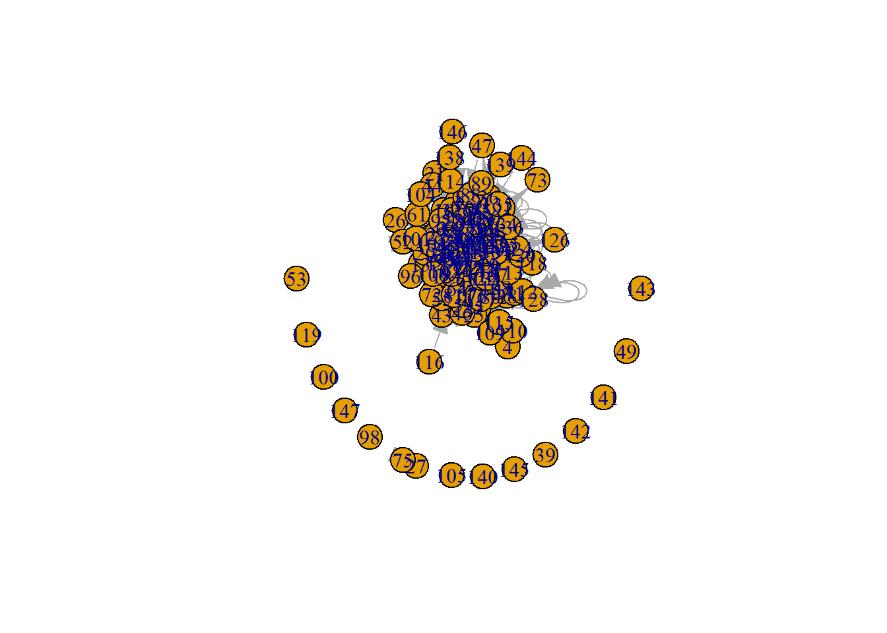
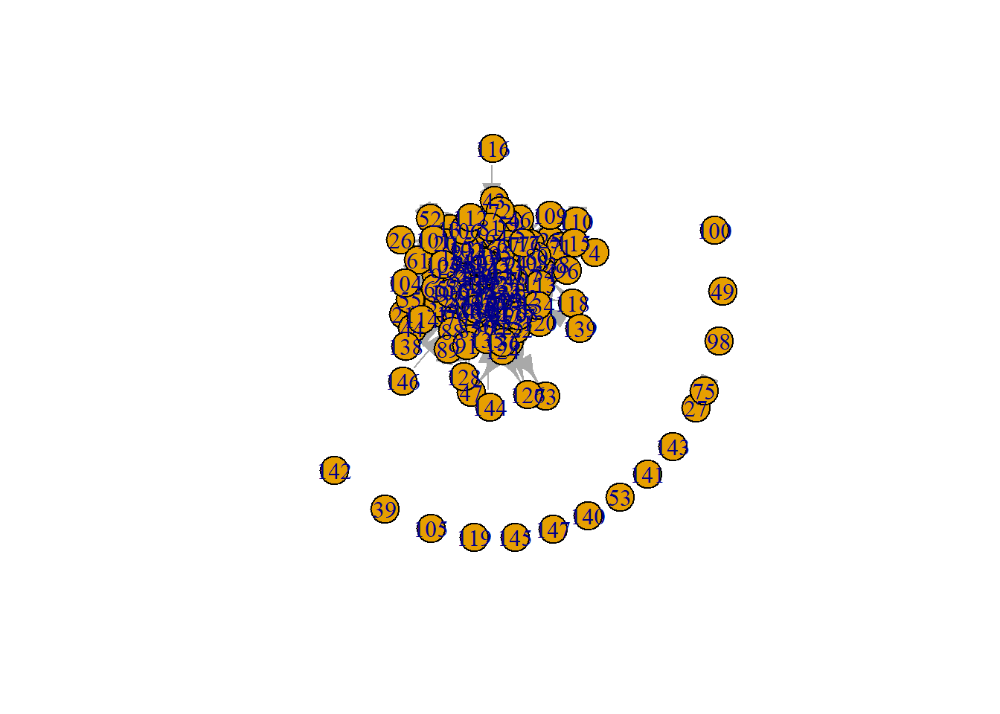
#> [1] 0.048457742.6.2 Recip ties
# define undirected network
atmnet1_un <- atmnet1 == 1 & t(atmnet1) == 1
G2 <- graph_from_adjacency_matrix(atmnet1_un, mode = "undirected", weighted = NULL, diag = TRUE, add.colnames = NA,
add.rownames = NA)
# attach data if you want
edges <- igraph::as_data_frame(G2, what = "edges")
G2 <- graph_from_data_frame(edges, directed = FALSE, vertices = keyf)
plot(G2)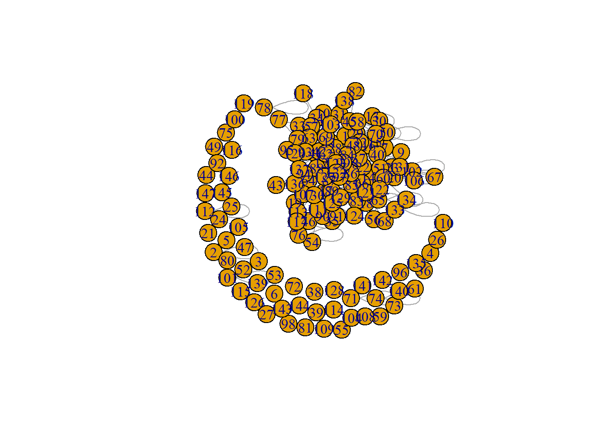
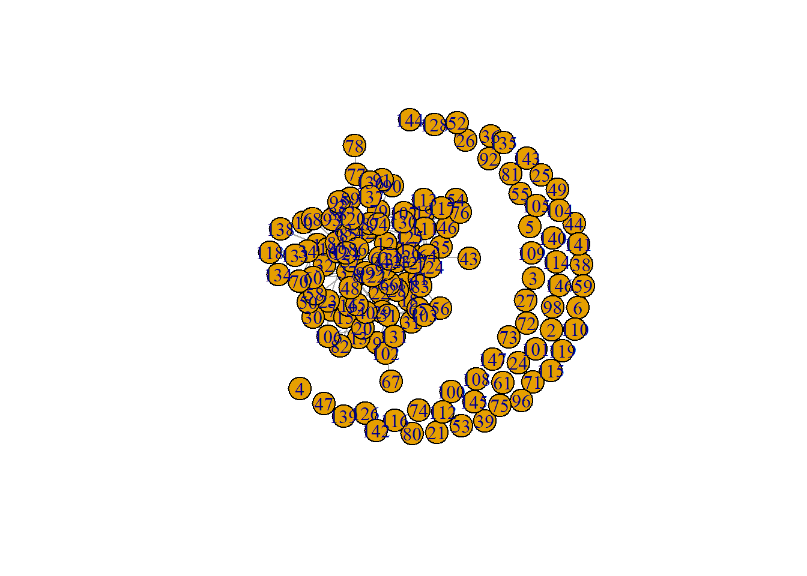 ### Which nodes to plot
# first make sure we don't end up with MPS who only mention themselves
diag(atmnet1_un) <- 0
# lets find the noisolates
noisolates <- rowSums(atmnet1_un, na.rm = T) > 0
# length(noisolates) sum(noisolates) if you select, select both correct nomination network as ego
# characteristics
atmnet1_un_sel <- atmnet1_un[noisolates, noisolates]
# if you are going to use the dataset keyf to add characteristics to the plot later, make sure to
# run the correct selection as well!!!
keyf_sel <- keyf[noisolates, ]
G2_sel <- graph_from_adjacency_matrix(atmnet1_un_sel, mode = "undirected", weighted = NULL, diag = TRUE,
add.colnames = NA, add.rownames = NA)
G2_sel <- simplify(G2_sel)
plot(G2_sel, mode = "undirected")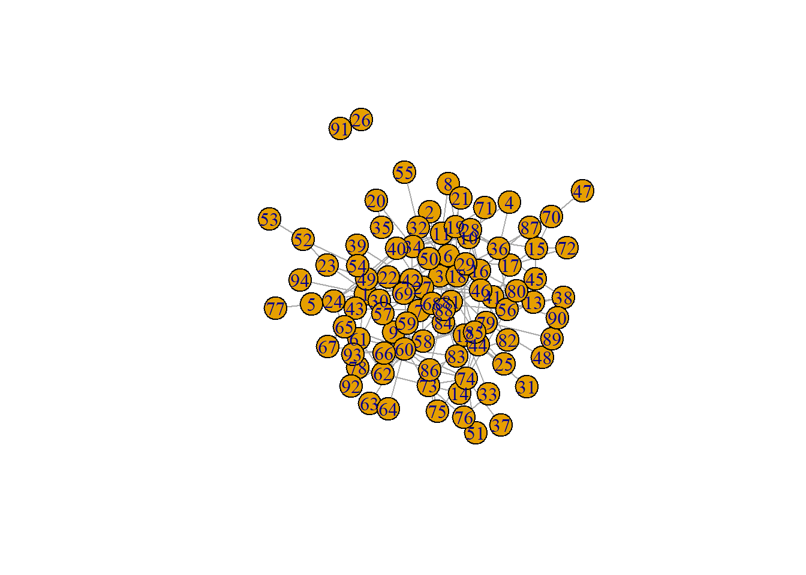
# option 1: see above. only select MPs from the liberal party
selection <- keyf$Partij == "VVD"
# build new adjacency matrix
atmnet1_un_sel2 <- atmnet1_un[selection, selection]
# etc.
# option 2. Suppose we have attached our dataset to our graph object. only select MPs from the
# liberal party
selection <- V(G2)$Partij == "VVD"
selection_id <- which(selection) # this gives us a numeric variable
G_sel <- induced_subgraph(G2, v = selection_id)
plot(G_sel)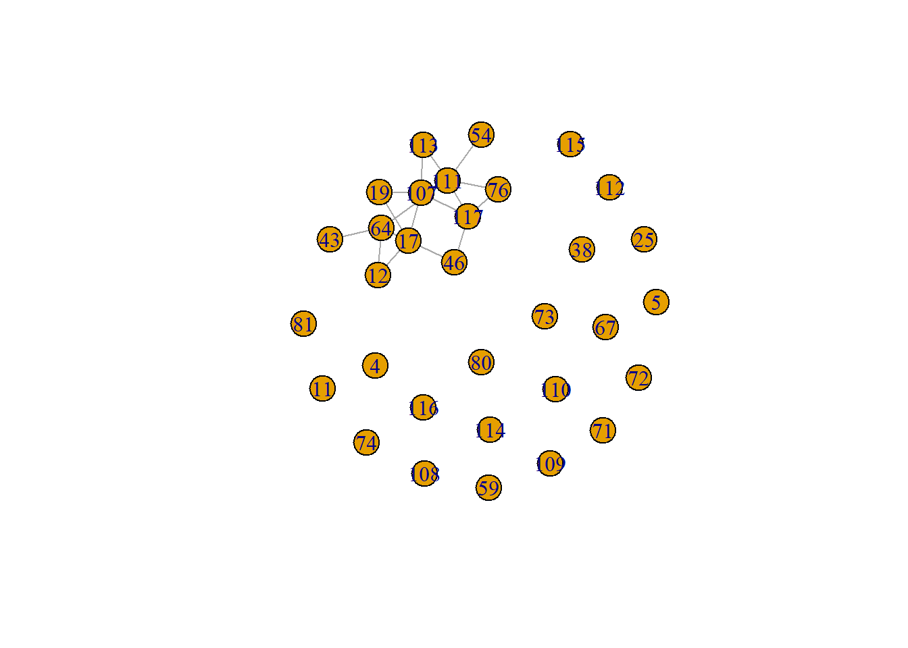
# option 1: see above. only select MPs from the liberal party
selection <- keyf$Partij == "VVD"
# build new adjacency matrix
atmnet1_un_sel2 <- atmnet1_un[selection, selection]
# etc.
# option 2. Suppose we have attached our dataset to our graph object. only select MPs from the
# liberal party
selection <- V(G2)$Partij == "VVD"
selection_id <- which(selection) # this gives us a numeric variable
G_sel <- induced_subgraph(G2, v = selection_id)
plot(G_sel)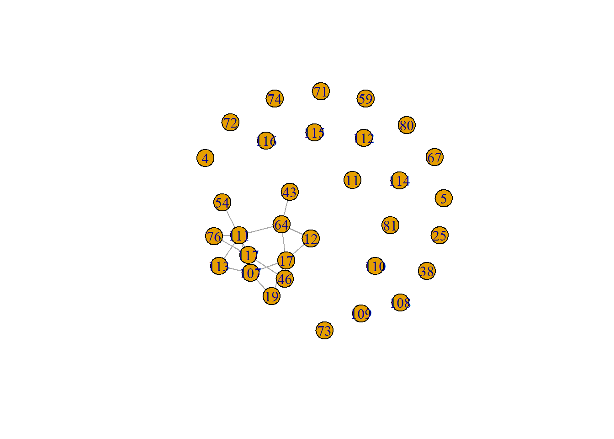
2.6.3 Changing vertices
# changing V
V(G2)$size = igraph::degree(G2) * 1.05 #naturally, you may use a different node-level structural characteristic here.
plot(G2, mode = "undirected")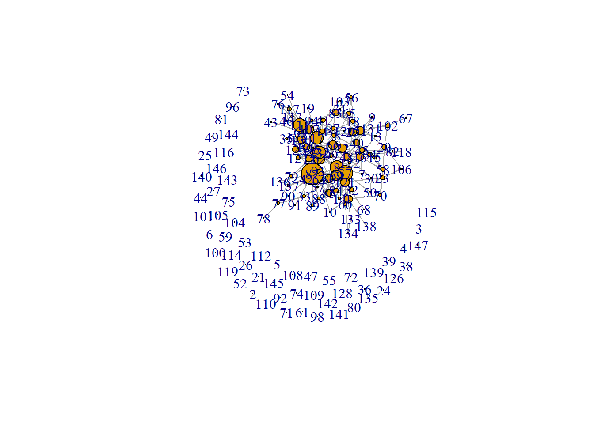 #### Labels & colors
V(G2)$label = as.character(V(G2)$Naam2)
V(G2)$label.cex = 1
V(G2)$color <- ifelse(V(G2)$Geslacht == "vrouw", "red", "green")
plot(G2, mode = "undirected")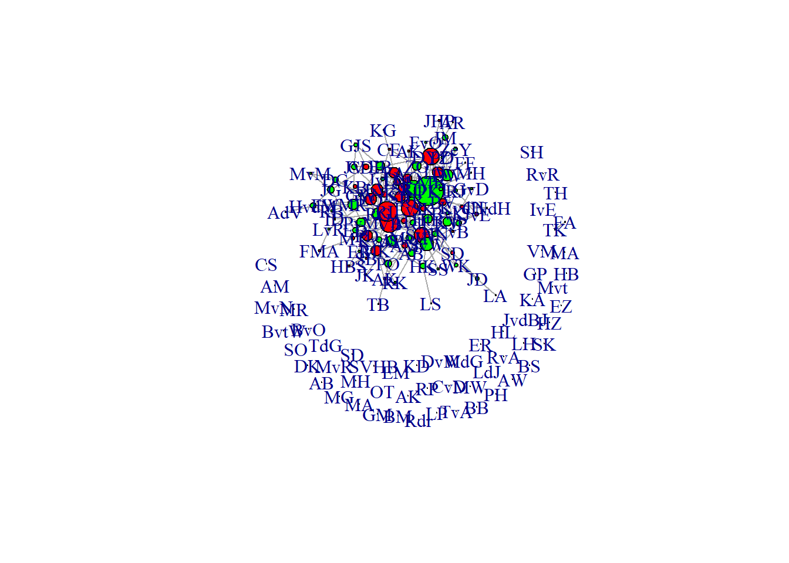 ### Changing Edges
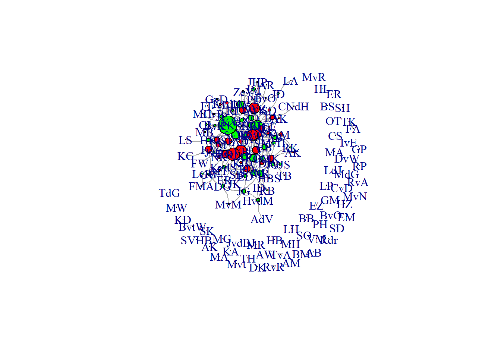
2.6.4 Legend
# adding legend because I am working in Rmarkdown I need some {}
plot.igraph(G2, margin = 0, mode = "udirected")
legend(x = -1, y = -1, c("Female", "Male"), pch = 21, col = "#777777", pt.bg = c("red", "green"), pt.cex = 2,
cex = 0.8, bty = "n", ncol = 1)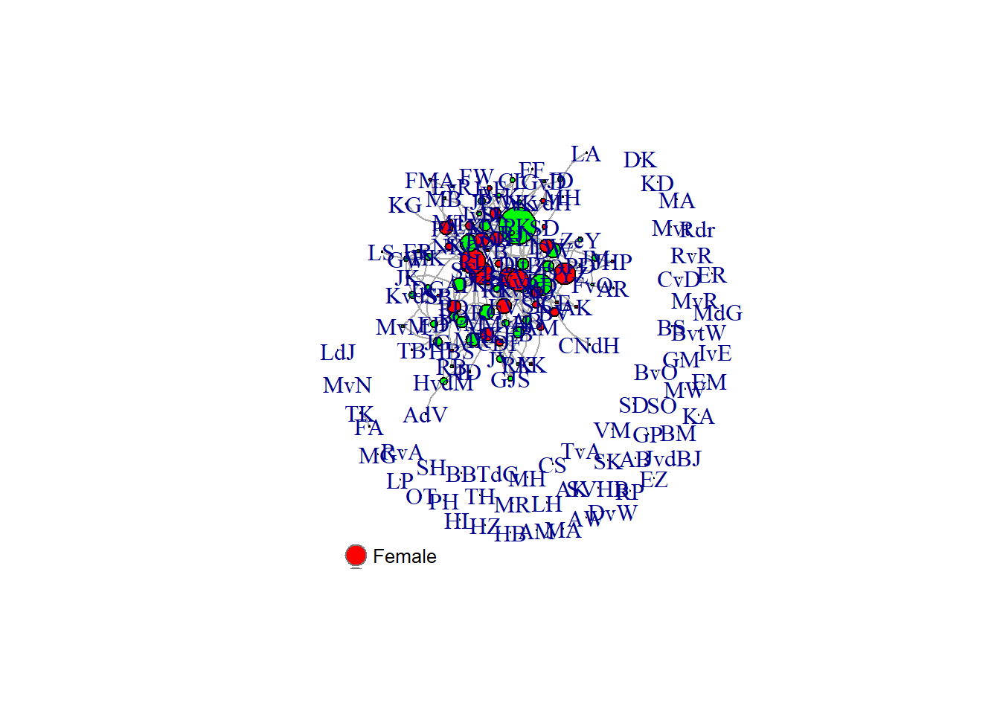
# knitr::include_graphics('TK.jpg')
plot(keyf$X, keyf$Y, xlim = c(-18, 18), ylim = c(-18, 18), col = keyf$Partij_col, pch = 16)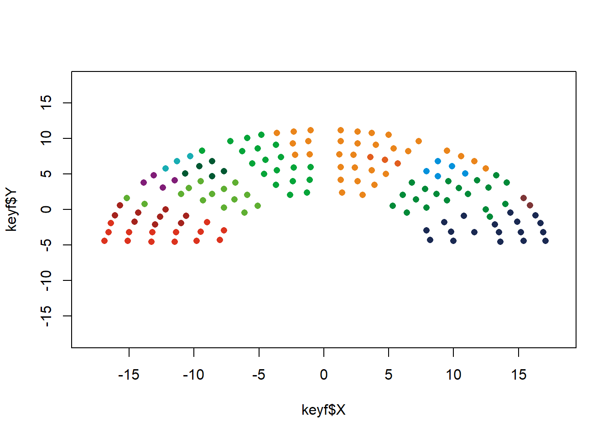
# it really depends on your plotting window (size, resolution etc.) to get consistent results you
# need to define this beforehand. won't do that now.
# give nodes coler of their party
V(G2)$color <- keyf$Partij_col
# change node size a bit
V(G2)$size = igraph::degree(G2) * 1.05 + 6
# remove the labels
V(G2)$label = ""
# less curvature
E(G2)$curved = 0.1
owncoords <- cbind(keyf$X, keyf$Y)
owncoords <- owncoords/8
owncoords[, 1] <- (owncoords[, 1] - mean(owncoords[, 1]))
owncoords[, 2] <- (owncoords[, 2] - mean(owncoords[, 2]))
plot.igraph(G2, mode = "undirected", layout = owncoords, rescale = F, margin = c(0, 0, 0, 0), xlim = c(min(owncoords[,
1]), max(owncoords[, 1])), ylim = c(min(owncoords[, 2]), max(owncoords[, 2])))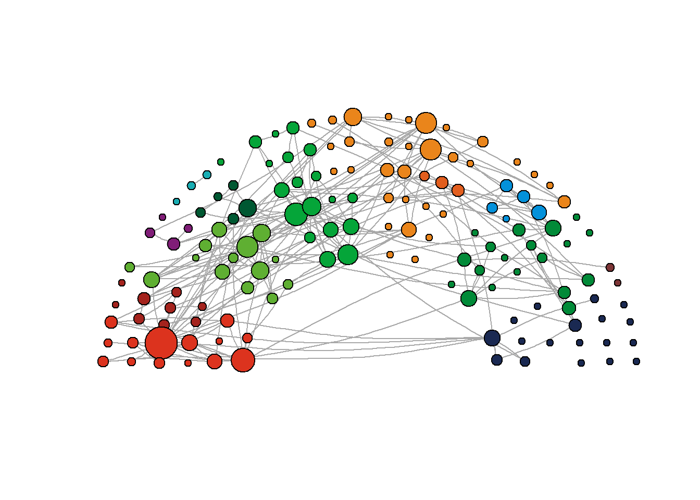 ### Changing edges 2
# construct adjacency matrix first define the recipricated atmentions in each wave
atmnet1_un <- atmnet1 == 1 & t(atmnet1) == 1
atmnet2_un <- atmnet2 == 1 & t(atmnet2) == 1
atmnet3_un <- atmnet3 == 1 & t(atmnet3) == 1
atmnet_weighted <- atmnet1_un + atmnet2_un + atmnet3_un
# contstruct graph / let us keep the loops note that the parameter 'weighted' is set to true.
G_w <- igraph::graph_from_adjacency_matrix(atmnet_weighted, mode = "undirected", weighted = TRUE, diag = TRUE,
add.colnames = NA, add.rownames = NA)
# attach data
edges <- igraph::as_data_frame(G_w, what = "edges")
# inspect the weight.
edges$weight #not a lot of variation. #> [1] 1 1 1 1 2 1 1 2 1 1 1 1 2 1 1 1 2 1 1 2 1 1 1 1 1 2 1 1 2 1 1 1 1 1 1 1 1 3 1 1 1 1 2 3 1 1 1
#> [48] 2 1 1 2 1 1 1 1 1 1 1 2 1 2 1 1 2 1 1 1 1 1 1 1 1 1 1 1 1 1 1 2 1 1 1 2 1 1 1 1 1 1 2 1 1 1 1
#> [95] 1 1 1 1 3 2 1 1 1 1 1 1 1 1 1 1 2 1 2 1 2 1 1 2 1 1 3 1 1 1 1 2 2 1 1 3 1 3 2 1 1 1 1 1 1 2 1
#> [142] 1 1 1 1 1 1 1 1 1 2 2 3 1 1 3 2 1 1 2 1 1 1 1 1 1 1 1 1 2 1 1 1 1 1 1 1 1 1 2 3 2 1 1 1 1 1 1
#> [189] 1 2 1 1 2 1 1 1 1 1 1 1 2 1 1 1 1 2 1 1 3 1 1 2 1 1 1 1 1 1 2 2 1 1 1 1 1 1 1 1 1 1 1 1 1 1 1
#> [236] 1 2 1 1 2 1 2 1 1 1 1 1 1 1 3 1 3 1 1 1 2 2 1 1 1 1 1 1 2 1 2 3 1 1 1 1 1 1 1 2 1 3 1 2 1 1 1
#> [283] 1 2 1 1 1 1 1 3 1 3 1 1 1 1 2 1 1 2 1 1 1 1 1 1 1 1 2 1 2 1 1 1 1 1 1 1 2 3 3 1 1 1 1 1 1 3 2
#> [330] 1 1 1# rebuild the graph.
G_w <- graph_from_data_frame(edges, directed = FALSE, vertices = keyf)
# add changes as above
V(G_w)$color <- keyf$Partij_col
V(G_w)$size = igraph::degree(G_w) * 1.05 + 6
V(G_w)$label = ""
E(G_w)$curved = 0.1
# add the weights
E(G_w)$width <- E(G_w)$weight
plot.igraph(G_w, mode = "undirected", layout = owncoords, rescale = F, margin = c(0, 0, 0, 0), xlim = c(min(owncoords[,
1]), max(owncoords[, 1])), ylim = c(min(owncoords[, 2]), max(owncoords[, 2])))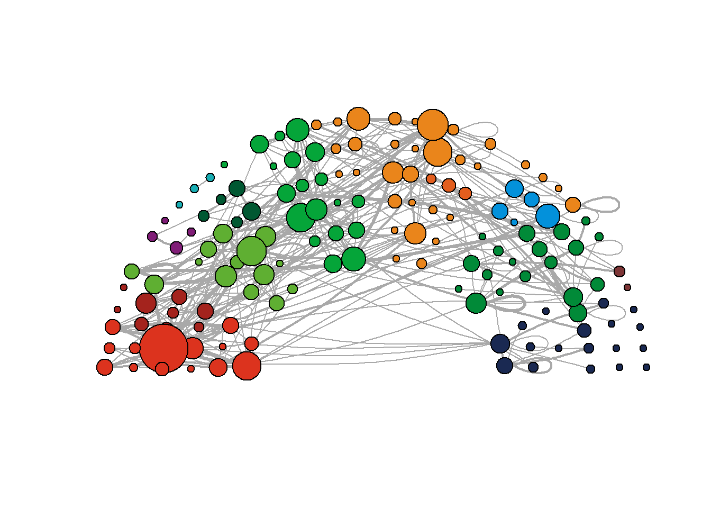 ## Publication data (Radboud)
rm(list = ls())
# load the necessary datasets
load("data/soc_df.RData")
load("data/soc_collabs1.RData")
load("data/soc_collabs2.RData")# get unique collaborators of soc staff first
soc_collabs_unique <- unique(soc_collabs[, 4]) # so 229 unique collaborators for RU staff?
soc_collabs_unique <- c(soc_collabs_unique, soc_df$gs_id) # add the soc staff themselves.
soc_collabs_unique <- data.frame(soc_collabs_unique)
soc_collabs_unique$v1 <- 1 # convenient to select on after the merge
soc_collabs_unique <- unique(soc_collabs_unique)
# so this is a very important step, we join the unique soc collaborators to the collaborators of
# collaborators
require(tidyverse)
onefivedegree <- left_join(collabs_1deep, soc_collabs_unique, by = c(coauth_id = "soc_collabs_unique"))
# Then, we drop those that are not among sociology collaborators and who don't lsit coauthors
# regardless
onefivedegree <- onefivedegree[!is.na(onefivedegree$v1), ]
onefivedegree <- onefivedegree[!is.na(onefivedegree$coauth), ]
# we pick those columns and have an edgelist of soc collaborators and whether they collaborate with
# those same collaborators the 1.5 degree network
onefivedegree <- onefivedegree[, c("name", "coauth")]
names(onefivedegree) <- c("from", "to")
# we get soc collaborators and add those to the data above and end up with a nice edgelist!
socc <- soc_collabs[!is.na(soc_collabs$coauth), ]
socc <- socc[, c("name", "coauth")]
names(socc) <- c("from", "to")
onefivedegree <- rbind(socc, onefivedegree)
save(onefivedegree, file = "data/soc_onefivedegree.RData")onefivedegree <- as.matrix(onefivedegree) # matrix because igraph wants that
library(igraph) # Notice that we call igraph here, in anticipation of the viz tutorial.
net1 <- graph_from_edgelist(onefivedegree, directed = TRUE) # Notice the igraph function here!
plot(net1) # pretty ugly!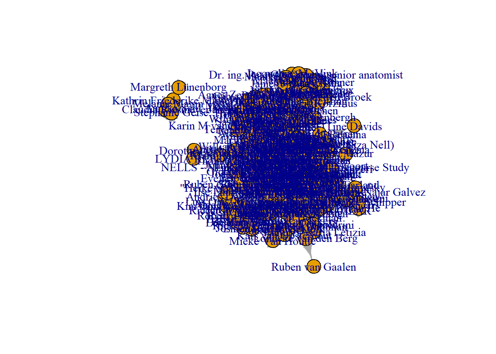
set.seed(2345)
l <- layout_nicely(net1) #https://igraph.org/r/doc/layout_with_mds.html
# plot(g, layout = l)
# Improvement
plotje <- plot(net1 ,
vertex.color = "blue", # nice color for the vertices
vertex.size = 8, # we'll vertices a bit smaller
vertex.frame.color = "gray", # we'll put a gray frame around vertices
# vertex.label.color = "black", # not that ugly blue color for the labels (names)
# vertex.label.family = "Helvetica", # not a fan of times new roman in figures
# vertex.label.cex = 0.4, # make the label a bit smaller too
# vertex.label.dist = 0.5, # we'll pull the labels a bit away from the vertices
vertex.label = NA,
edge.curved = 0.2, # curved edges is always a nice touch
edge.arrow.size = 0.1,
layout = l) # make arrow size (direction of edge) smaller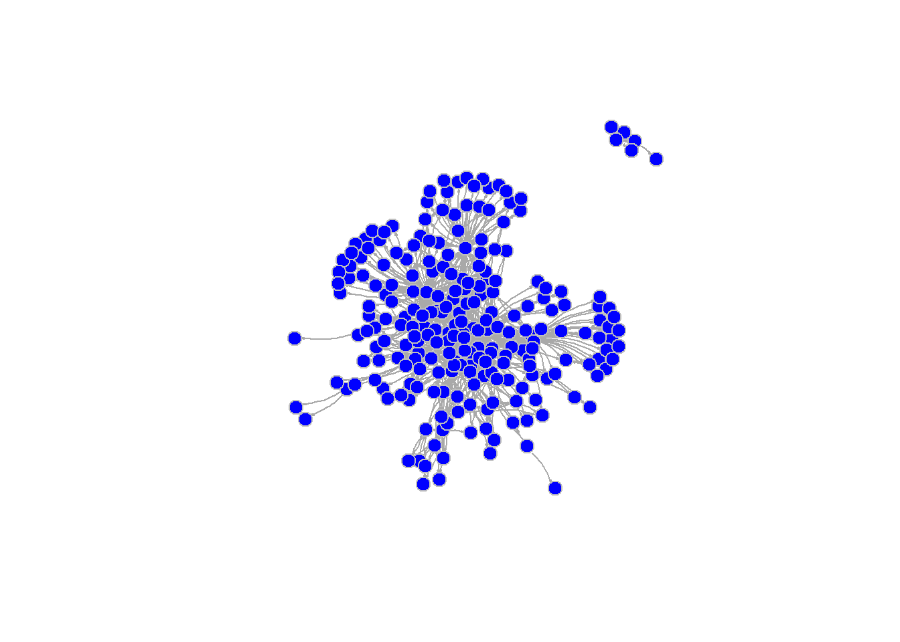
in_network <- data.frame(as_ids(V(net1)))
names(in_network)[1] <- "name"
#soc_df$total_cites <- soc_df$total_cites.x
ru_nodes <- soc_df[, c("name", "total_cites")]
in_network <- left_join(in_network, ru_nodes, by = c("name" = "name"))
in_network$vcol <- ifelse(is.na(in_network$total_cites), "#E69F00", "#56B4E9")
plot(net1, layout = l,
vertex.color = in_network$vcol, #THIS WAS WHAT WE DID THE LAST CODEBLOCK FOR!
vertex.size = 4, # we'll make them a bit smaller
vertex.frame.color = "gray", # we'll put a frame around it
vertex.label.color = "black", # not that ugly blue color for the names
vertex.label.family = "Helvetica", # not a fan of times in figures
vertex.label.cex = 0.4, # a bit smaller too
vertex.label.dist = 0.5, # we'll pull the labels a bit away from the vertices
edge.curved = 0.2, # curved edges is always a nice tough
edge.arrow.size = 0.1) # arrow size smallerplot(net1,
vertex.color = in_network$vcol,
#NOTICE THESE CONDITIONAL STATEMENTS BELOW
vertex.label = ifelse(!is.na(in_network$total_cites), in_network$name, NA),
vertex.size = 4, # we'll make them a bit smaller
vertex.frame.color = "gray", # we'll put a frame around it
vertex.label.color = "black", # not that ugly blue color for the names
vertex.label.family = "Helvetica", # not a fan of times in figures
vertex.label.cex = 0.65, # a bit smaller too
vertex.label.dist = 0.5, # we'll pull the labels a bit away from the vertices
edge.curved = 0.2, # curved edges is always a nice tough
edge.arrow.size = 0.1) # arrow size smallerplot(net1,
vertex.color = in_network$vcol,
vertex.label = ifelse(!is.na(in_network$total_cites), in_network$name, NA),
# SAME HERE, TRY TO SMOOTH THE TOTAL_CITES A BIT WITH LOGSCALE
vertex.size = ifelse(!is.na(in_network$total_cites), log(in_network$total_cites), 2),
vertex.frame.color = "gray", # we'll put a frame around it
vertex.label.color = "black", # not that ugly blue color for the names
vertex.label.family = "Helvetica", # not a fan of times in figures
vertex.label.cex = 0.65, # a bit smaller too
vertex.label.dist = 0.5, # we'll pull the labels a bit away from the vertices
edge.curved = 0.2, # curved edges is always a nice tough
edge.arrow.size = 0.1) # arrow size 